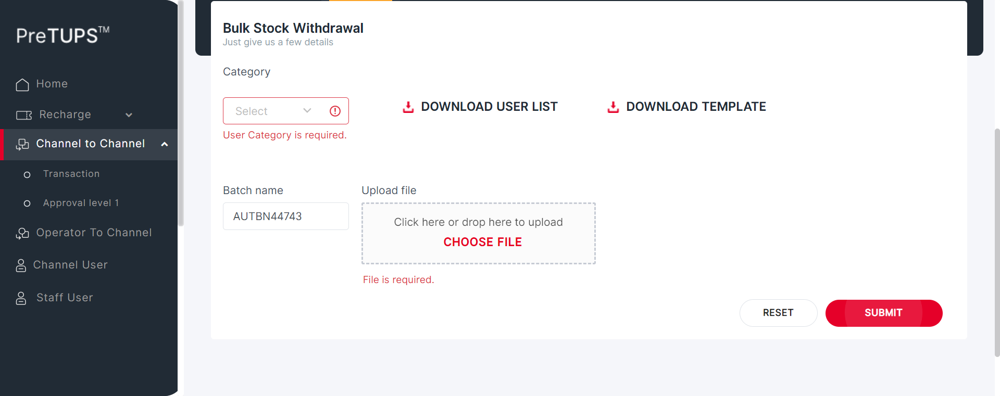

| Status | Timestamp | Details |
|---|---|---|
| info_outline | 4:19:35 PM | Category Code for Super Distributor: DIST |
| info_outline | 4:19:35 PM | Entered webInterface(Super Distributor) |
| info_outline | 4:19:35 PM | webInterface() :: select query: Select WEB_INTERFACE_ALLOWED from categories where category_name= ? |
| info_outline | 4:19:35 PM | Database Returns: WEB_INTERFACE_ALLOWED (Y) |
| info_outline | 4:19:35 PM | Exited webInterface() |
| info_outline | 4:19:35 PM | Entered performC2CBulkWithdrawal(Super Distributor, Dealer, 724699085750159, 2468) |
| info_outline | 4:19:35 PM | Login ID Found as: AUT_48675 |
| info_outline | 4:19:35 PM | Password Found as: com@2468 |
| info_outline | 4:19:36 PM | Trying to select Language |
| info_outline | 4:19:36 PM | Language selected successfully as: English |
| info_outline | 4:19:36 PM | Trying to enter Login ID |
| info_outline | 4:19:36 PM | Login ID entered successfully as: AUT_48675 |
| info_outline | 4:19:36 PM | Trying to enter Password |
| info_outline | 4:19:36 PM | Password entered successfully as: com@2468 |
| info_outline | 4:19:36 PM | Trying to click Login Button |
| info_outline | 4:19:36 PM | Login button clicked successfully |
| info_outline | 4:19:36 PM | Error Message Found on Login Screen: |
| info_outline | 4:19:46 PM | Trying clicking on C2C Heading |
| info_outline | 4:19:46 PM | User clicked C2C Heading Link. |
| info_outline | 4:19:46 PM | Trying clicking on C2C Transaction Heading |
| info_outline | 4:19:46 PM | User clicked C2C Transaction Heading Link. |
| info_outline | 4:19:46 PM | C2C Heading and Transaction Heading is clicked |
| info_outline | 4:19:46 PM | Trying clicking on C2C Bulk Operation Heading |
| info_outline | 4:19:52 PM | User clicked C2C Bulk Operation Heading. |
| info_outline | 4:19:52 PM | User clicked C2C Bulk Transfer Heading. |
| info_outline | 4:19:52 PM | Trying to select Category |
| info_outline | 4:19:53 PM | Category selected successfully as: Dealer |
| info_outline | 4:19:53 PM | Trying to delete file from directory... : .//src//test//resources//UploadDocuments//C2C_Bulk_Withdraw// |
| info_outline | 4:19:53 PM | Deleted all files from directory... : .//src//test//resources//UploadDocuments//C2C_Bulk_Withdraw// |
| info_outline | 4:19:58 PM | User clicked UserList Download Button. |
| info_outline | 4:19:58 PM | Trying to Count Files in Directory .//src//test//resources//UploadDocuments//C2C_Bulk_Withdraw// |
| info_outline | 4:19:58 PM | No OF Files under .//src//test//resources//UploadDocuments//C2C_Bulk_Withdraw// :: 1 |
| info_outline | 4:19:58 PM | Getting File Path.. |
| info_outline | 4:20:03 PM | COUNTER_msisdn = 3 |
| info_outline | 4:20:03 PM | COUNTER_login = 4 |
| info_outline | 4:20:03 PM | UNEMPTY STORED IN ARRAY TO wRITE IN EXCEL |
| info_outline | 4:20:03 PM | arr[0][0] 721068166078287 |
| info_outline | 4:20:03 PM | arr[0][1] AUT_53955 |
| info_outline | 4:20:03 PM | arr[0][2] 061114233 |
| info_outline | 4:20:03 PM | arr[0][3] 944 |
| info_outline | 4:20:04 PM | arr[0][4] POSTETOPUP |
| info_outline | 4:20:04 PM | User available balance : 4720 |
| info_outline | 4:20:04 PM | Trying to delete file from directory... : .//src//test//resources//UploadDocuments//C2C_Bulk_Withdraw// |
| info_outline | 4:20:04 PM | Deleted all files from directory... : .//src//test//resources//UploadDocuments//C2C_Bulk_Withdraw// |
| info_outline | 4:20:06 PM | User clicked Template Download Button. |
| info_outline | 4:20:06 PM | Getting File Path.. |
| info_outline | 4:20:11 PM | Getting File Path.. |
| info_outline | 4:20:16 PM | File Path:null |
| info_outline | 4:20:16 PM | Writing to excel .... |
| info_outline | 4:20:16 PM | PATHNAME : .//src//test//resources//UploadDocuments//C2C_Bulk_Withdraw//userTemplateList1654771360548.xls |
| info_outline | 4:20:16 PM | User entered Batch Name : AUTBN26749 |
| info_outline | 4:20:16 PM | Uploading File... |
| info_outline | 4:20:22 PM | Trying to click submit button.. |
| info_outline | 4:20:22 PM | User clicked Submit Button. |
| info_outline | 4:20:27 PM | User will enter Channel User Pin |
| info_outline | 4:20:27 PM | User entered Channel User Pin : 2468 |
| info_outline | 4:20:27 PM | User clicked Recharge button |
| info_outline | 4:20:28 PM | Success Popup is visible. |
| info_outline | 4:20:28 PM | Trying to get transfer Status. |
| cancel | 4:20:49 PM | org.openqa.selenium.TimeoutException: Expected condition failed: waiting for visibility of element located by By.xpath: //div[@class = 'col-sm-12 md-4']//div[@id = 'successfultitle']//b (tried for 20 second(s) with 500 milliseconds interval) at org.openqa.selenium.support.ui.WebDriverWait.timeoutException(WebDriverWait.java:82) at org.openqa.selenium.support.ui.FluentWait.until(FluentWait.java:272) at angular.pageobjects.c2ctransfer.C2CTransfers.actualMessage(C2CTransfers.java:1717) at angular.feature.C2CWithdrawBulkRevamp.performC2CBulkWithdrawal(C2CWithdrawBulkRevamp.java:147) at angular.testscripts.prereuisitesangular.PreRequisite_C2CWithdrawBulk_Revamp.A_01_Test_C2CBulkWithdrawal(PreRequisite_C2CWithdrawBulk_Revamp.java:44) at sun.reflect.NativeMethodAccessorImpl.invoke0(Native Method) at sun.reflect.NativeMethodAccessorImpl.invoke(Unknown Source) at sun.reflect.DelegatingMethodAccessorImpl.invoke(Unknown Source) at java.lang.reflect.Method.invoke(Unknown Source) at org.testng.internal.MethodInvocationHelper.invokeMethod(MethodInvocationHelper.java:124) at org.testng.internal.Invoker.invokeMethod(Invoker.java:580) at org.testng.internal.Invoker.invokeTestMethod(Invoker.java:716) at org.testng.internal.Invoker.invokeTestMethods(Invoker.java:988) at org.testng.internal.TestMethodWorker.invokeTestMethods(TestMethodWorker.java:125) at org.testng.internal.TestMethodWorker.run(TestMethodWorker.java:109) at org.testng.TestRunner.privateRun(TestRunner.java:648) at org.testng.TestRunner.run(TestRunner.java:505) at org.testng.SuiteRunner.runTest(SuiteRunner.java:455) at org.testng.SuiteRunner.runSequentially(SuiteRunner.java:450) at org.testng.SuiteRunner.privateRun(SuiteRunner.java:415) at org.testng.SuiteRunner.run(SuiteRunner.java:364) at org.testng.SuiteRunnerWorker.runSuite(SuiteRunnerWorker.java:52) at org.testng.SuiteRunnerWorker.run(SuiteRunnerWorker.java:84) at org.testng.TestNG.runSuitesSequentially(TestNG.java:1208) at org.testng.TestNG.runSuitesLocally(TestNG.java:1137) at org.testng.TestNG.runSuites(TestNG.java:1049) at org.testng.TestNG.run(TestNG.java:1017) at org.testng.remote.AbstractRemoteTestNG.run(AbstractRemoteTestNG.java:115) at org.testng.remote.RemoteTestNG.initAndRun(RemoteTestNG.java:251) at org.testng.remote.RemoteTestNG.main(RemoteTestNG.java:77) Caused by: org.openqa.selenium.NoSuchElementException: Cannot locate an element using By.xpath: //div[@class = 'col-sm-12 md-4']//div[@id = 'successfultitle']//b For documentation on this error, please visit: http://seleniumhq.org/exceptions/no_such_element.html Build info: version: '3.10.0', revision: '176b4a9', time: '2018-03-02T19:03:16.397Z' System info: host: 'MCKL-20005142', ip: '192.168.1.38', os.name: 'Windows 10', os.arch: 'amd64', os.version: '10.0', java.version: '1.8.0_291' Driver info: driver.version: unknown at org.openqa.selenium.support.ui.ExpectedConditions.lambda$findElement$0(ExpectedConditions.java:896) at java.util.Optional.orElseThrow(Unknown Source) at org.openqa.selenium.support.ui.ExpectedConditions.findElement(ExpectedConditions.java:895) at org.openqa.selenium.support.ui.ExpectedConditions.access$000(ExpectedConditions.java:44) at org.openqa.selenium.support.ui.ExpectedConditions$7.apply(ExpectedConditions.java:206) at org.openqa.selenium.support.ui.ExpectedConditions$7.apply(ExpectedConditions.java:202) at org.openqa.selenium.support.ui.FluentWait.until(FluentWait.java:249) ... 28 more |
| error | 4:21:10 PM | Error while getting SSH Server Instance : com.jcraft.jsch.JSchException: java.net.ConnectException: Connection timed out: connect |
| cancel | 4:21:10 PM | Catalina Log |
| low_priority | 4:21:10 PM | java.lang.NullPointerException at com.utils.ExcelUtility.getCellData(ExcelUtility.java:311) at angular.testscripts.prereuisitesangular.PreRequisite_C2CWithdrawBulk_Revamp.TestDataFeed1(PreRequisite_C2CWithdrawBulk_Revamp.java:474) at sun.reflect.NativeMethodAccessorImpl.invoke0(Native Method) at sun.reflect.NativeMethodAccessorImpl.invoke(Unknown Source) at sun.reflect.DelegatingMethodAccessorImpl.invoke(Unknown Source) at java.lang.reflect.Method.invoke(Unknown Source) at org.testng.internal.MethodInvocationHelper.invokeMethod(MethodInvocationHelper.java:124) at org.testng.internal.MethodInvocationHelper.invokeMethod(MethodInvocationHelper.java:74) at org.testng.internal.MethodInvocationHelper.invokeMethodNoCheckedException(MethodInvocationHelper.java:45) at org.testng.internal.MethodInvocationHelper.invokeDataProvider(MethodInvocationHelper.java:131) at org.testng.internal.Parameters.handleParameters(Parameters.java:706) at org.testng.internal.ParameterHandler.handleParameters(ParameterHandler.java:49) at org.testng.internal.ParameterHandler.createParameters(ParameterHandler.java:37) at org.testng.internal.Invoker.invokeTestMethods(Invoker.java:923) at org.testng.internal.TestMethodWorker.invokeTestMethods(TestMethodWorker.java:125) at org.testng.internal.TestMethodWorker.run(TestMethodWorker.java:109) at org.testng.TestRunner.privateRun(TestRunner.java:648) at org.testng.TestRunner.run(TestRunner.java:505) at org.testng.SuiteRunner.runTest(SuiteRunner.java:455) at org.testng.SuiteRunner.runSequentially(SuiteRunner.java:450) at org.testng.SuiteRunner.privateRun(SuiteRunner.java:415) at org.testng.SuiteRunner.run(SuiteRunner.java:364) at org.testng.SuiteRunnerWorker.runSuite(SuiteRunnerWorker.java:52) at org.testng.SuiteRunnerWorker.run(SuiteRunnerWorker.java:84) at org.testng.TestNG.runSuitesSequentially(TestNG.java:1208) at org.testng.TestNG.runSuitesLocally(TestNG.java:1137) at org.testng.TestNG.runSuites(TestNG.java:1049) at org.testng.TestNG.run(TestNG.java:1017) at org.testng.remote.AbstractRemoteTestNG.run(AbstractRemoteTestNG.java:115) at org.testng.remote.RemoteTestNG.initAndRun(RemoteTestNG.java:251) at org.testng.remote.RemoteTestNG.main(RemoteTestNG.java:77) |
| low_priority | 4:21:10 PM | java.lang.NullPointerException at com.utils.ExcelUtility.getCellData(ExcelUtility.java:311) at angular.testscripts.prereuisitesangular.PreRequisite_C2CWithdrawBulk_Revamp.TestDataFeed1(PreRequisite_C2CWithdrawBulk_Revamp.java:474) at sun.reflect.NativeMethodAccessorImpl.invoke0(Native Method) at sun.reflect.NativeMethodAccessorImpl.invoke(Unknown Source) at sun.reflect.DelegatingMethodAccessorImpl.invoke(Unknown Source) at java.lang.reflect.Method.invoke(Unknown Source) at org.testng.internal.MethodInvocationHelper.invokeMethod(MethodInvocationHelper.java:124) at org.testng.internal.MethodInvocationHelper.invokeMethod(MethodInvocationHelper.java:74) at org.testng.internal.MethodInvocationHelper.invokeMethodNoCheckedException(MethodInvocationHelper.java:45) at org.testng.internal.MethodInvocationHelper.invokeDataProvider(MethodInvocationHelper.java:131) at org.testng.internal.Parameters.handleParameters(Parameters.java:706) at org.testng.internal.ParameterHandler.handleParameters(ParameterHandler.java:49) at org.testng.internal.ParameterHandler.createParameters(ParameterHandler.java:37) at org.testng.internal.Invoker.invokeTestMethods(Invoker.java:923) at org.testng.internal.TestMethodWorker.invokeTestMethods(TestMethodWorker.java:125) at org.testng.internal.TestMethodWorker.run(TestMethodWorker.java:109) at org.testng.TestRunner.privateRun(TestRunner.java:648) at org.testng.TestRunner.run(TestRunner.java:505) at org.testng.SuiteRunner.runTest(SuiteRunner.java:455) at org.testng.SuiteRunner.runSequentially(SuiteRunner.java:450) at org.testng.SuiteRunner.privateRun(SuiteRunner.java:415) at org.testng.SuiteRunner.run(SuiteRunner.java:364) at org.testng.SuiteRunnerWorker.runSuite(SuiteRunnerWorker.java:52) at org.testng.SuiteRunnerWorker.run(SuiteRunnerWorker.java:84) at org.testng.TestNG.runSuitesSequentially(TestNG.java:1208) at org.testng.TestNG.runSuitesLocally(TestNG.java:1137) at org.testng.TestNG.runSuites(TestNG.java:1049) at org.testng.TestNG.run(TestNG.java:1017) at org.testng.remote.AbstractRemoteTestNG.run(AbstractRemoteTestNG.java:115) at org.testng.remote.RemoteTestNG.initAndRun(RemoteTestNG.java:251) at org.testng.remote.RemoteTestNG.main(RemoteTestNG.java:77) |
| low_priority | 4:21:10 PM | java.lang.NullPointerException at com.utils.ExcelUtility.getCellData(ExcelUtility.java:311) at angular.testscripts.prereuisitesangular.PreRequisite_C2CWithdrawBulk_Revamp.TestDataFeed1(PreRequisite_C2CWithdrawBulk_Revamp.java:474) at sun.reflect.NativeMethodAccessorImpl.invoke0(Native Method) at sun.reflect.NativeMethodAccessorImpl.invoke(Unknown Source) at sun.reflect.DelegatingMethodAccessorImpl.invoke(Unknown Source) at java.lang.reflect.Method.invoke(Unknown Source) at org.testng.internal.MethodInvocationHelper.invokeMethod(MethodInvocationHelper.java:124) at org.testng.internal.MethodInvocationHelper.invokeMethod(MethodInvocationHelper.java:74) at org.testng.internal.MethodInvocationHelper.invokeMethodNoCheckedException(MethodInvocationHelper.java:45) at org.testng.internal.MethodInvocationHelper.invokeDataProvider(MethodInvocationHelper.java:131) at org.testng.internal.Parameters.handleParameters(Parameters.java:706) at org.testng.internal.ParameterHandler.handleParameters(ParameterHandler.java:49) at org.testng.internal.ParameterHandler.createParameters(ParameterHandler.java:37) at org.testng.internal.Invoker.invokeTestMethods(Invoker.java:923) at org.testng.internal.TestMethodWorker.invokeTestMethods(TestMethodWorker.java:125) at org.testng.internal.TestMethodWorker.run(TestMethodWorker.java:109) at org.testng.TestRunner.privateRun(TestRunner.java:648) at org.testng.TestRunner.run(TestRunner.java:505) at org.testng.SuiteRunner.runTest(SuiteRunner.java:455) at org.testng.SuiteRunner.runSequentially(SuiteRunner.java:450) at org.testng.SuiteRunner.privateRun(SuiteRunner.java:415) at org.testng.SuiteRunner.run(SuiteRunner.java:364) at org.testng.SuiteRunnerWorker.runSuite(SuiteRunnerWorker.java:52) at org.testng.SuiteRunnerWorker.run(SuiteRunnerWorker.java:84) at org.testng.TestNG.runSuitesSequentially(TestNG.java:1208) at org.testng.TestNG.runSuitesLocally(TestNG.java:1137) at org.testng.TestNG.runSuites(TestNG.java:1049) at org.testng.TestNG.run(TestNG.java:1017) at org.testng.remote.AbstractRemoteTestNG.run(AbstractRemoteTestNG.java:115) at org.testng.remote.RemoteTestNG.initAndRun(RemoteTestNG.java:251) at org.testng.remote.RemoteTestNG.main(RemoteTestNG.java:77) |
| low_priority | 4:21:11 PM | java.lang.NullPointerException at com.utils.ExcelUtility.getCellData(ExcelUtility.java:311) at angular.testscripts.prereuisitesangular.PreRequisite_C2CWithdrawBulk_Revamp.TestDataFeed1(PreRequisite_C2CWithdrawBulk_Revamp.java:474) at sun.reflect.NativeMethodAccessorImpl.invoke0(Native Method) at sun.reflect.NativeMethodAccessorImpl.invoke(Unknown Source) at sun.reflect.DelegatingMethodAccessorImpl.invoke(Unknown Source) at java.lang.reflect.Method.invoke(Unknown Source) at org.testng.internal.MethodInvocationHelper.invokeMethod(MethodInvocationHelper.java:124) at org.testng.internal.MethodInvocationHelper.invokeMethod(MethodInvocationHelper.java:74) at org.testng.internal.MethodInvocationHelper.invokeMethodNoCheckedException(MethodInvocationHelper.java:45) at org.testng.internal.MethodInvocationHelper.invokeDataProvider(MethodInvocationHelper.java:131) at org.testng.internal.Parameters.handleParameters(Parameters.java:706) at org.testng.internal.ParameterHandler.handleParameters(ParameterHandler.java:49) at org.testng.internal.ParameterHandler.createParameters(ParameterHandler.java:37) at org.testng.internal.Invoker.invokeTestMethods(Invoker.java:923) at org.testng.internal.TestMethodWorker.invokeTestMethods(TestMethodWorker.java:125) at org.testng.internal.TestMethodWorker.run(TestMethodWorker.java:109) at org.testng.TestRunner.privateRun(TestRunner.java:648) at org.testng.TestRunner.run(TestRunner.java:505) at org.testng.SuiteRunner.runTest(SuiteRunner.java:455) at org.testng.SuiteRunner.runSequentially(SuiteRunner.java:450) at org.testng.SuiteRunner.privateRun(SuiteRunner.java:415) at org.testng.SuiteRunner.run(SuiteRunner.java:364) at org.testng.SuiteRunnerWorker.runSuite(SuiteRunnerWorker.java:52) at org.testng.SuiteRunnerWorker.run(SuiteRunnerWorker.java:84) at org.testng.TestNG.runSuitesSequentially(TestNG.java:1208) at org.testng.TestNG.runSuitesLocally(TestNG.java:1137) at org.testng.TestNG.runSuites(TestNG.java:1049) at org.testng.TestNG.run(TestNG.java:1017) at org.testng.remote.AbstractRemoteTestNG.run(AbstractRemoteTestNG.java:115) at org.testng.remote.RemoteTestNG.initAndRun(RemoteTestNG.java:251) at org.testng.remote.RemoteTestNG.main(RemoteTestNG.java:77) |
| low_priority | 4:21:11 PM | java.lang.NullPointerException at com.utils.ExcelUtility.getCellData(ExcelUtility.java:311) at angular.testscripts.prereuisitesangular.PreRequisite_C2CWithdrawBulk_Revamp.TestDataFeed1(PreRequisite_C2CWithdrawBulk_Revamp.java:474) at sun.reflect.NativeMethodAccessorImpl.invoke0(Native Method) at sun.reflect.NativeMethodAccessorImpl.invoke(Unknown Source) at sun.reflect.DelegatingMethodAccessorImpl.invoke(Unknown Source) at java.lang.reflect.Method.invoke(Unknown Source) at org.testng.internal.MethodInvocationHelper.invokeMethod(MethodInvocationHelper.java:124) at org.testng.internal.MethodInvocationHelper.invokeMethod(MethodInvocationHelper.java:74) at org.testng.internal.MethodInvocationHelper.invokeMethodNoCheckedException(MethodInvocationHelper.java:45) at org.testng.internal.MethodInvocationHelper.invokeDataProvider(MethodInvocationHelper.java:131) at org.testng.internal.Parameters.handleParameters(Parameters.java:706) at org.testng.internal.ParameterHandler.handleParameters(ParameterHandler.java:49) at org.testng.internal.ParameterHandler.createParameters(ParameterHandler.java:37) at org.testng.internal.Invoker.invokeTestMethods(Invoker.java:923) at org.testng.internal.TestMethodWorker.invokeTestMethods(TestMethodWorker.java:125) at org.testng.internal.TestMethodWorker.run(TestMethodWorker.java:109) at org.testng.TestRunner.privateRun(TestRunner.java:648) at org.testng.TestRunner.run(TestRunner.java:505) at org.testng.SuiteRunner.runTest(SuiteRunner.java:455) at org.testng.SuiteRunner.runSequentially(SuiteRunner.java:450) at org.testng.SuiteRunner.privateRun(SuiteRunner.java:415) at org.testng.SuiteRunner.run(SuiteRunner.java:364) at org.testng.SuiteRunnerWorker.runSuite(SuiteRunnerWorker.java:52) at org.testng.SuiteRunnerWorker.run(SuiteRunnerWorker.java:84) at org.testng.TestNG.runSuitesSequentially(TestNG.java:1208) at org.testng.TestNG.runSuitesLocally(TestNG.java:1137) at org.testng.TestNG.runSuites(TestNG.java:1049) at org.testng.TestNG.run(TestNG.java:1017) at org.testng.remote.AbstractRemoteTestNG.run(AbstractRemoteTestNG.java:115) at org.testng.remote.RemoteTestNG.initAndRun(RemoteTestNG.java:251) at org.testng.remote.RemoteTestNG.main(RemoteTestNG.java:77) |
| low_priority | 4:21:11 PM | java.lang.NullPointerException at com.utils.ExcelUtility.getCellData(ExcelUtility.java:311) at angular.testscripts.prereuisitesangular.PreRequisite_C2CWithdrawBulk_Revamp.TestDataFeed1(PreRequisite_C2CWithdrawBulk_Revamp.java:474) at sun.reflect.NativeMethodAccessorImpl.invoke0(Native Method) at sun.reflect.NativeMethodAccessorImpl.invoke(Unknown Source) at sun.reflect.DelegatingMethodAccessorImpl.invoke(Unknown Source) at java.lang.reflect.Method.invoke(Unknown Source) at org.testng.internal.MethodInvocationHelper.invokeMethod(MethodInvocationHelper.java:124) at org.testng.internal.MethodInvocationHelper.invokeMethod(MethodInvocationHelper.java:74) at org.testng.internal.MethodInvocationHelper.invokeMethodNoCheckedException(MethodInvocationHelper.java:45) at org.testng.internal.MethodInvocationHelper.invokeDataProvider(MethodInvocationHelper.java:131) at org.testng.internal.Parameters.handleParameters(Parameters.java:706) at org.testng.internal.ParameterHandler.handleParameters(ParameterHandler.java:49) at org.testng.internal.ParameterHandler.createParameters(ParameterHandler.java:37) at org.testng.internal.Invoker.invokeTestMethods(Invoker.java:923) at org.testng.internal.TestMethodWorker.invokeTestMethods(TestMethodWorker.java:125) at org.testng.internal.TestMethodWorker.run(TestMethodWorker.java:109) at org.testng.TestRunner.privateRun(TestRunner.java:648) at org.testng.TestRunner.run(TestRunner.java:505) at org.testng.SuiteRunner.runTest(SuiteRunner.java:455) at org.testng.SuiteRunner.runSequentially(SuiteRunner.java:450) at org.testng.SuiteRunner.privateRun(SuiteRunner.java:415) at org.testng.SuiteRunner.run(SuiteRunner.java:364) at org.testng.SuiteRunnerWorker.runSuite(SuiteRunnerWorker.java:52) at org.testng.SuiteRunnerWorker.run(SuiteRunnerWorker.java:84) at org.testng.TestNG.runSuitesSequentially(TestNG.java:1208) at org.testng.TestNG.runSuitesLocally(TestNG.java:1137) at org.testng.TestNG.runSuites(TestNG.java:1049) at org.testng.TestNG.run(TestNG.java:1017) at org.testng.remote.AbstractRemoteTestNG.run(AbstractRemoteTestNG.java:115) at org.testng.remote.RemoteTestNG.initAndRun(RemoteTestNG.java:251) at org.testng.remote.RemoteTestNG.main(RemoteTestNG.java:77) |
| info_outline | 4:21:11 PM | Entered :: getSystemPreference(TRF_RULE_USER_LEVEL_ALLOW) |
| info_outline | 4:21:11 PM | Query Repository Returns: DEFAULT_VALUE (true) |
| Status | Timestamp | Details |
|---|---|---|
| info_outline | 4:21:11 PM | Category Code for Super Distributor: DIST |
| info_outline | 4:21:11 PM | Entered webInterface(Super Distributor) |
| info_outline | 4:21:11 PM | webInterface() :: select query: Select WEB_INTERFACE_ALLOWED from categories where category_name= ? |
| info_outline | 4:21:11 PM | Database Returns: WEB_INTERFACE_ALLOWED (Y) |
| info_outline | 4:21:11 PM | Exited webInterface() |
| info_outline | 4:21:11 PM | Entered C2CBulkWithdrawalBlankCategory(Super Distributor, Dealer, 724699085750159, 2468) |
| info_outline | 4:21:12 PM | Login ID Found as: AUT_48675 |
| info_outline | 4:21:12 PM | Password Found as: com@2468 |
| info_outline | 4:21:12 PM | Trying to select Language |
| info_outline | 4:21:12 PM | Language selected successfully as: English |
| info_outline | 4:21:12 PM | Trying to enter Login ID |
| info_outline | 4:21:13 PM | Login ID entered successfully as: AUT_48675 |
| info_outline | 4:21:13 PM | Trying to enter Password |
| info_outline | 4:21:13 PM | Password entered successfully as: com@2468 |
| info_outline | 4:21:13 PM | Trying to click Login Button |
| info_outline | 4:21:13 PM | Login button clicked successfully |
| info_outline | 4:21:13 PM | Error Message Found on Login Screen: |
| info_outline | 4:21:15 PM | Trying clicking on C2C Heading |
| info_outline | 4:21:15 PM | User clicked C2C Heading Link. |
| info_outline | 4:21:15 PM | Trying clicking on C2C Transaction Heading |
| info_outline | 4:21:15 PM | User clicked C2C Transaction Heading Link. |
| info_outline | 4:21:15 PM | C2C Heading and Transaction Heading is clicked |
| info_outline | 4:21:15 PM | Trying clicking on C2C Bulk Operation Heading |
| info_outline | 4:21:15 PM | User clicked C2C Bulk Operation Heading. |
| info_outline | 4:21:15 PM | User clicked C2C Bulk Transfer Heading. |
| info_outline | 4:21:15 PM | User entered Batch Name : AUTBN44743 |
| info_outline | 4:21:15 PM | Trying to click submit button.. |
| info_outline | 4:21:15 PM | User clicked Submit Button. |
| info_outline | 4:21:15 PM | Trying to get Error Validation messaged from GUI |
| info_outline | 4:21:16 PM | errorMessageCaptured : User Category is required. |
| info_outline | 4:21:16 PM | Expected: User Category is required. |
| info_outline | 4:21:16 PM | Message Validation Success |
| info_outline | 4:21:16 PM |  |
| error | 4:21:37 PM | Error while getting SSH Server Instance : com.jcraft.jsch.JSchException: java.net.ConnectException: Connection timed out: connect |
| check_circle | 4:21:37 PM | Catalina Log |
| info_outline | 4:21:37 PM | Exited C2CBulkWithdrawalBlankCategory() |
| low_priority | 4:21:37 PM | java.lang.NullPointerException at com.utils.ExcelUtility.getCellData(ExcelUtility.java:311) at angular.testscripts.prereuisitesangular.PreRequisite_C2CWithdrawBulk_Revamp.TestDataFeed1(PreRequisite_C2CWithdrawBulk_Revamp.java:474) at sun.reflect.NativeMethodAccessorImpl.invoke0(Native Method) at sun.reflect.NativeMethodAccessorImpl.invoke(Unknown Source) at sun.reflect.DelegatingMethodAccessorImpl.invoke(Unknown Source) at java.lang.reflect.Method.invoke(Unknown Source) at org.testng.internal.MethodInvocationHelper.invokeMethod(MethodInvocationHelper.java:124) at org.testng.internal.MethodInvocationHelper.invokeMethod(MethodInvocationHelper.java:74) at org.testng.internal.MethodInvocationHelper.invokeMethodNoCheckedException(MethodInvocationHelper.java:45) at org.testng.internal.MethodInvocationHelper.invokeDataProvider(MethodInvocationHelper.java:131) at org.testng.internal.Parameters.handleParameters(Parameters.java:706) at org.testng.internal.ParameterHandler.handleParameters(ParameterHandler.java:49) at org.testng.internal.ParameterHandler.createParameters(ParameterHandler.java:37) at org.testng.internal.Invoker.invokeTestMethods(Invoker.java:923) at org.testng.internal.TestMethodWorker.invokeTestMethods(TestMethodWorker.java:125) at org.testng.internal.TestMethodWorker.run(TestMethodWorker.java:109) at org.testng.TestRunner.privateRun(TestRunner.java:648) at org.testng.TestRunner.run(TestRunner.java:505) at org.testng.SuiteRunner.runTest(SuiteRunner.java:455) at org.testng.SuiteRunner.runSequentially(SuiteRunner.java:450) at org.testng.SuiteRunner.privateRun(SuiteRunner.java:415) at org.testng.SuiteRunner.run(SuiteRunner.java:364) at org.testng.SuiteRunnerWorker.runSuite(SuiteRunnerWorker.java:52) at org.testng.SuiteRunnerWorker.run(SuiteRunnerWorker.java:84) at org.testng.TestNG.runSuitesSequentially(TestNG.java:1208) at org.testng.TestNG.runSuitesLocally(TestNG.java:1137) at org.testng.TestNG.runSuites(TestNG.java:1049) at org.testng.TestNG.run(TestNG.java:1017) at org.testng.remote.AbstractRemoteTestNG.run(AbstractRemoteTestNG.java:115) at org.testng.remote.RemoteTestNG.initAndRun(RemoteTestNG.java:251) at org.testng.remote.RemoteTestNG.main(RemoteTestNG.java:77) |
| low_priority | 4:21:37 PM | java.lang.NullPointerException at com.utils.ExcelUtility.getCellData(ExcelUtility.java:311) at angular.testscripts.prereuisitesangular.PreRequisite_C2CWithdrawBulk_Revamp.TestDataFeed1(PreRequisite_C2CWithdrawBulk_Revamp.java:474) at sun.reflect.NativeMethodAccessorImpl.invoke0(Native Method) at sun.reflect.NativeMethodAccessorImpl.invoke(Unknown Source) at sun.reflect.DelegatingMethodAccessorImpl.invoke(Unknown Source) at java.lang.reflect.Method.invoke(Unknown Source) at org.testng.internal.MethodInvocationHelper.invokeMethod(MethodInvocationHelper.java:124) at org.testng.internal.MethodInvocationHelper.invokeMethod(MethodInvocationHelper.java:74) at org.testng.internal.MethodInvocationHelper.invokeMethodNoCheckedException(MethodInvocationHelper.java:45) at org.testng.internal.MethodInvocationHelper.invokeDataProvider(MethodInvocationHelper.java:131) at org.testng.internal.Parameters.handleParameters(Parameters.java:706) at org.testng.internal.ParameterHandler.handleParameters(ParameterHandler.java:49) at org.testng.internal.ParameterHandler.createParameters(ParameterHandler.java:37) at org.testng.internal.Invoker.invokeTestMethods(Invoker.java:923) at org.testng.internal.TestMethodWorker.invokeTestMethods(TestMethodWorker.java:125) at org.testng.internal.TestMethodWorker.run(TestMethodWorker.java:109) at org.testng.TestRunner.privateRun(TestRunner.java:648) at org.testng.TestRunner.run(TestRunner.java:505) at org.testng.SuiteRunner.runTest(SuiteRunner.java:455) at org.testng.SuiteRunner.runSequentially(SuiteRunner.java:450) at org.testng.SuiteRunner.privateRun(SuiteRunner.java:415) at org.testng.SuiteRunner.run(SuiteRunner.java:364) at org.testng.SuiteRunnerWorker.runSuite(SuiteRunnerWorker.java:52) at org.testng.SuiteRunnerWorker.run(SuiteRunnerWorker.java:84) at org.testng.TestNG.runSuitesSequentially(TestNG.java:1208) at org.testng.TestNG.runSuitesLocally(TestNG.java:1137) at org.testng.TestNG.runSuites(TestNG.java:1049) at org.testng.TestNG.run(TestNG.java:1017) at org.testng.remote.AbstractRemoteTestNG.run(AbstractRemoteTestNG.java:115) at org.testng.remote.RemoteTestNG.initAndRun(RemoteTestNG.java:251) at org.testng.remote.RemoteTestNG.main(RemoteTestNG.java:77) |
| low_priority | 4:21:37 PM | java.lang.NullPointerException at com.utils.ExcelUtility.getCellData(ExcelUtility.java:311) at angular.testscripts.prereuisitesangular.PreRequisite_C2CWithdrawBulk_Revamp.TestDataFeed1(PreRequisite_C2CWithdrawBulk_Revamp.java:474) at sun.reflect.NativeMethodAccessorImpl.invoke0(Native Method) at sun.reflect.NativeMethodAccessorImpl.invoke(Unknown Source) at sun.reflect.DelegatingMethodAccessorImpl.invoke(Unknown Source) at java.lang.reflect.Method.invoke(Unknown Source) at org.testng.internal.MethodInvocationHelper.invokeMethod(MethodInvocationHelper.java:124) at org.testng.internal.MethodInvocationHelper.invokeMethod(MethodInvocationHelper.java:74) at org.testng.internal.MethodInvocationHelper.invokeMethodNoCheckedException(MethodInvocationHelper.java:45) at org.testng.internal.MethodInvocationHelper.invokeDataProvider(MethodInvocationHelper.java:131) at org.testng.internal.Parameters.handleParameters(Parameters.java:706) at org.testng.internal.ParameterHandler.handleParameters(ParameterHandler.java:49) at org.testng.internal.ParameterHandler.createParameters(ParameterHandler.java:37) at org.testng.internal.Invoker.invokeTestMethods(Invoker.java:923) at org.testng.internal.TestMethodWorker.invokeTestMethods(TestMethodWorker.java:125) at org.testng.internal.TestMethodWorker.run(TestMethodWorker.java:109) at org.testng.TestRunner.privateRun(TestRunner.java:648) at org.testng.TestRunner.run(TestRunner.java:505) at org.testng.SuiteRunner.runTest(SuiteRunner.java:455) at org.testng.SuiteRunner.runSequentially(SuiteRunner.java:450) at org.testng.SuiteRunner.privateRun(SuiteRunner.java:415) at org.testng.SuiteRunner.run(SuiteRunner.java:364) at org.testng.SuiteRunnerWorker.runSuite(SuiteRunnerWorker.java:52) at org.testng.SuiteRunnerWorker.run(SuiteRunnerWorker.java:84) at org.testng.TestNG.runSuitesSequentially(TestNG.java:1208) at org.testng.TestNG.runSuitesLocally(TestNG.java:1137) at org.testng.TestNG.runSuites(TestNG.java:1049) at org.testng.TestNG.run(TestNG.java:1017) at org.testng.remote.AbstractRemoteTestNG.run(AbstractRemoteTestNG.java:115) at org.testng.remote.RemoteTestNG.initAndRun(RemoteTestNG.java:251) at org.testng.remote.RemoteTestNG.main(RemoteTestNG.java:77) |
| low_priority | 4:21:37 PM | java.lang.NullPointerException at com.utils.ExcelUtility.getCellData(ExcelUtility.java:311) at angular.testscripts.prereuisitesangular.PreRequisite_C2CWithdrawBulk_Revamp.TestDataFeed1(PreRequisite_C2CWithdrawBulk_Revamp.java:474) at sun.reflect.NativeMethodAccessorImpl.invoke0(Native Method) at sun.reflect.NativeMethodAccessorImpl.invoke(Unknown Source) at sun.reflect.DelegatingMethodAccessorImpl.invoke(Unknown Source) at java.lang.reflect.Method.invoke(Unknown Source) at org.testng.internal.MethodInvocationHelper.invokeMethod(MethodInvocationHelper.java:124) at org.testng.internal.MethodInvocationHelper.invokeMethod(MethodInvocationHelper.java:74) at org.testng.internal.MethodInvocationHelper.invokeMethodNoCheckedException(MethodInvocationHelper.java:45) at org.testng.internal.MethodInvocationHelper.invokeDataProvider(MethodInvocationHelper.java:131) at org.testng.internal.Parameters.handleParameters(Parameters.java:706) at org.testng.internal.ParameterHandler.handleParameters(ParameterHandler.java:49) at org.testng.internal.ParameterHandler.createParameters(ParameterHandler.java:37) at org.testng.internal.Invoker.invokeTestMethods(Invoker.java:923) at org.testng.internal.TestMethodWorker.invokeTestMethods(TestMethodWorker.java:125) at org.testng.internal.TestMethodWorker.run(TestMethodWorker.java:109) at org.testng.TestRunner.privateRun(TestRunner.java:648) at org.testng.TestRunner.run(TestRunner.java:505) at org.testng.SuiteRunner.runTest(SuiteRunner.java:455) at org.testng.SuiteRunner.runSequentially(SuiteRunner.java:450) at org.testng.SuiteRunner.privateRun(SuiteRunner.java:415) at org.testng.SuiteRunner.run(SuiteRunner.java:364) at org.testng.SuiteRunnerWorker.runSuite(SuiteRunnerWorker.java:52) at org.testng.SuiteRunnerWorker.run(SuiteRunnerWorker.java:84) at org.testng.TestNG.runSuitesSequentially(TestNG.java:1208) at org.testng.TestNG.runSuitesLocally(TestNG.java:1137) at org.testng.TestNG.runSuites(TestNG.java:1049) at org.testng.TestNG.run(TestNG.java:1017) at org.testng.remote.AbstractRemoteTestNG.run(AbstractRemoteTestNG.java:115) at org.testng.remote.RemoteTestNG.initAndRun(RemoteTestNG.java:251) at org.testng.remote.RemoteTestNG.main(RemoteTestNG.java:77) |
| low_priority | 4:21:37 PM | java.lang.NullPointerException at com.utils.ExcelUtility.getCellData(ExcelUtility.java:311) at angular.testscripts.prereuisitesangular.PreRequisite_C2CWithdrawBulk_Revamp.TestDataFeed1(PreRequisite_C2CWithdrawBulk_Revamp.java:474) at sun.reflect.NativeMethodAccessorImpl.invoke0(Native Method) at sun.reflect.NativeMethodAccessorImpl.invoke(Unknown Source) at sun.reflect.DelegatingMethodAccessorImpl.invoke(Unknown Source) at java.lang.reflect.Method.invoke(Unknown Source) at org.testng.internal.MethodInvocationHelper.invokeMethod(MethodInvocationHelper.java:124) at org.testng.internal.MethodInvocationHelper.invokeMethod(MethodInvocationHelper.java:74) at org.testng.internal.MethodInvocationHelper.invokeMethodNoCheckedException(MethodInvocationHelper.java:45) at org.testng.internal.MethodInvocationHelper.invokeDataProvider(MethodInvocationHelper.java:131) at org.testng.internal.Parameters.handleParameters(Parameters.java:706) at org.testng.internal.ParameterHandler.handleParameters(ParameterHandler.java:49) at org.testng.internal.ParameterHandler.createParameters(ParameterHandler.java:37) at org.testng.internal.Invoker.invokeTestMethods(Invoker.java:923) at org.testng.internal.TestMethodWorker.invokeTestMethods(TestMethodWorker.java:125) at org.testng.internal.TestMethodWorker.run(TestMethodWorker.java:109) at org.testng.TestRunner.privateRun(TestRunner.java:648) at org.testng.TestRunner.run(TestRunner.java:505) at org.testng.SuiteRunner.runTest(SuiteRunner.java:455) at org.testng.SuiteRunner.runSequentially(SuiteRunner.java:450) at org.testng.SuiteRunner.privateRun(SuiteRunner.java:415) at org.testng.SuiteRunner.run(SuiteRunner.java:364) at org.testng.SuiteRunnerWorker.runSuite(SuiteRunnerWorker.java:52) at org.testng.SuiteRunnerWorker.run(SuiteRunnerWorker.java:84) at org.testng.TestNG.runSuitesSequentially(TestNG.java:1208) at org.testng.TestNG.runSuitesLocally(TestNG.java:1137) at org.testng.TestNG.runSuites(TestNG.java:1049) at org.testng.TestNG.run(TestNG.java:1017) at org.testng.remote.AbstractRemoteTestNG.run(AbstractRemoteTestNG.java:115) at org.testng.remote.RemoteTestNG.initAndRun(RemoteTestNG.java:251) at org.testng.remote.RemoteTestNG.main(RemoteTestNG.java:77) |
| low_priority | 4:21:37 PM | java.lang.NullPointerException at com.utils.ExcelUtility.getCellData(ExcelUtility.java:311) at angular.testscripts.prereuisitesangular.PreRequisite_C2CWithdrawBulk_Revamp.TestDataFeed1(PreRequisite_C2CWithdrawBulk_Revamp.java:474) at sun.reflect.NativeMethodAccessorImpl.invoke0(Native Method) at sun.reflect.NativeMethodAccessorImpl.invoke(Unknown Source) at sun.reflect.DelegatingMethodAccessorImpl.invoke(Unknown Source) at java.lang.reflect.Method.invoke(Unknown Source) at org.testng.internal.MethodInvocationHelper.invokeMethod(MethodInvocationHelper.java:124) at org.testng.internal.MethodInvocationHelper.invokeMethod(MethodInvocationHelper.java:74) at org.testng.internal.MethodInvocationHelper.invokeMethodNoCheckedException(MethodInvocationHelper.java:45) at org.testng.internal.MethodInvocationHelper.invokeDataProvider(MethodInvocationHelper.java:131) at org.testng.internal.Parameters.handleParameters(Parameters.java:706) at org.testng.internal.ParameterHandler.handleParameters(ParameterHandler.java:49) at org.testng.internal.ParameterHandler.createParameters(ParameterHandler.java:37) at org.testng.internal.Invoker.invokeTestMethods(Invoker.java:923) at org.testng.internal.TestMethodWorker.invokeTestMethods(TestMethodWorker.java:125) at org.testng.internal.TestMethodWorker.run(TestMethodWorker.java:109) at org.testng.TestRunner.privateRun(TestRunner.java:648) at org.testng.TestRunner.run(TestRunner.java:505) at org.testng.SuiteRunner.runTest(SuiteRunner.java:455) at org.testng.SuiteRunner.runSequentially(SuiteRunner.java:450) at org.testng.SuiteRunner.privateRun(SuiteRunner.java:415) at org.testng.SuiteRunner.run(SuiteRunner.java:364) at org.testng.SuiteRunnerWorker.runSuite(SuiteRunnerWorker.java:52) at org.testng.SuiteRunnerWorker.run(SuiteRunnerWorker.java:84) at org.testng.TestNG.runSuitesSequentially(TestNG.java:1208) at org.testng.TestNG.runSuitesLocally(TestNG.java:1137) at org.testng.TestNG.runSuites(TestNG.java:1049) at org.testng.TestNG.run(TestNG.java:1017) at org.testng.remote.AbstractRemoteTestNG.run(AbstractRemoteTestNG.java:115) at org.testng.remote.RemoteTestNG.initAndRun(RemoteTestNG.java:251) at org.testng.remote.RemoteTestNG.main(RemoteTestNG.java:77) |
| info_outline | 4:21:38 PM | Entered :: getSystemPreference(TRF_RULE_USER_LEVEL_ALLOW) |
| info_outline | 4:21:38 PM | Query Repository Returns: DEFAULT_VALUE (true) |
| Status | Timestamp | Details |
|---|---|---|
| info_outline | 4:21:38 PM | Category Code for Super Distributor: DIST |
| info_outline | 4:21:38 PM | Entered webInterface(Super Distributor) |
| info_outline | 4:21:38 PM | webInterface() :: select query: Select WEB_INTERFACE_ALLOWED from categories where category_name= ? |
| info_outline | 4:21:38 PM | Database Returns: WEB_INTERFACE_ALLOWED (Y) |
| info_outline | 4:21:38 PM | Exited webInterface() |
| info_outline | 4:21:38 PM | Entered C2CBulkWithdrawalBlankBatchName(Super Distributor, Dealer, 724699085750159, 2468) |
| info_outline | 4:21:38 PM | Login ID Found as: AUT_48675 |
| info_outline | 4:21:38 PM | Password Found as: com@2468 |
| info_outline | 4:21:39 PM | Trying to select Language |
| info_outline | 4:21:39 PM | Language selected successfully as: English |
| info_outline | 4:21:39 PM | Trying to enter Login ID |
| info_outline | 4:21:39 PM | Login ID entered successfully as: AUT_48675 |
| info_outline | 4:21:39 PM | Trying to enter Password |
| info_outline | 4:21:39 PM | Password entered successfully as: com@2468 |
| info_outline | 4:21:39 PM | Trying to click Login Button |
| info_outline | 4:21:39 PM | Login button clicked successfully |
| info_outline | 4:21:39 PM | Error Message Found on Login Screen: |
| info_outline | 4:21:41 PM | Trying clicking on C2C Heading |
| info_outline | 4:21:41 PM | User clicked C2C Heading Link. |
| info_outline | 4:21:41 PM | Trying clicking on C2C Transaction Heading |
| info_outline | 4:21:41 PM | User clicked C2C Transaction Heading Link. |
| info_outline | 4:21:41 PM | C2C Heading and Transaction Heading is clicked |
| info_outline | 4:21:41 PM | Trying clicking on C2C Bulk Operation Heading |
| info_outline | 4:21:41 PM | User clicked C2C Bulk Operation Heading. |
| info_outline | 4:21:41 PM | User clicked C2C Bulk Transfer Heading. |
| info_outline | 4:21:41 PM | Trying to select Category |
| info_outline | 4:21:42 PM | Category selected successfully as: Dealer |
| info_outline | 4:21:42 PM | Trying to click submit button.. |
| info_outline | 4:21:42 PM | User clicked Submit Button. |
| info_outline | 4:21:42 PM | Trying to get Error Validation messaged from GUI |
| info_outline | 4:21:42 PM | BATCH VALIDATION ERROR ON GUI : Dealer |
| cancel | 4:21:42 PM | Blank Batch Name not displayed on GUI |
| error | 4:22:03 PM | Error while getting SSH Server Instance : com.jcraft.jsch.JSchException: java.net.ConnectException: Connection timed out: connect |
| cancel | 4:22:03 PM | Catalina Log |
| info_outline | 4:22:04 PM | |
| info_outline | 4:22:04 PM | Exited C2CBulkWithdrawalBlankBatchName() |
| low_priority | 4:22:04 PM | java.lang.NullPointerException at com.utils.ExcelUtility.getCellData(ExcelUtility.java:311) at angular.testscripts.prereuisitesangular.PreRequisite_C2CWithdrawBulk_Revamp.TestDataFeed1(PreRequisite_C2CWithdrawBulk_Revamp.java:474) at sun.reflect.NativeMethodAccessorImpl.invoke0(Native Method) at sun.reflect.NativeMethodAccessorImpl.invoke(Unknown Source) at sun.reflect.DelegatingMethodAccessorImpl.invoke(Unknown Source) at java.lang.reflect.Method.invoke(Unknown Source) at org.testng.internal.MethodInvocationHelper.invokeMethod(MethodInvocationHelper.java:124) at org.testng.internal.MethodInvocationHelper.invokeMethod(MethodInvocationHelper.java:74) at org.testng.internal.MethodInvocationHelper.invokeMethodNoCheckedException(MethodInvocationHelper.java:45) at org.testng.internal.MethodInvocationHelper.invokeDataProvider(MethodInvocationHelper.java:131) at org.testng.internal.Parameters.handleParameters(Parameters.java:706) at org.testng.internal.ParameterHandler.handleParameters(ParameterHandler.java:49) at org.testng.internal.ParameterHandler.createParameters(ParameterHandler.java:37) at org.testng.internal.Invoker.invokeTestMethods(Invoker.java:923) at org.testng.internal.TestMethodWorker.invokeTestMethods(TestMethodWorker.java:125) at org.testng.internal.TestMethodWorker.run(TestMethodWorker.java:109) at org.testng.TestRunner.privateRun(TestRunner.java:648) at org.testng.TestRunner.run(TestRunner.java:505) at org.testng.SuiteRunner.runTest(SuiteRunner.java:455) at org.testng.SuiteRunner.runSequentially(SuiteRunner.java:450) at org.testng.SuiteRunner.privateRun(SuiteRunner.java:415) at org.testng.SuiteRunner.run(SuiteRunner.java:364) at org.testng.SuiteRunnerWorker.runSuite(SuiteRunnerWorker.java:52) at org.testng.SuiteRunnerWorker.run(SuiteRunnerWorker.java:84) at org.testng.TestNG.runSuitesSequentially(TestNG.java:1208) at org.testng.TestNG.runSuitesLocally(TestNG.java:1137) at org.testng.TestNG.runSuites(TestNG.java:1049) at org.testng.TestNG.run(TestNG.java:1017) at org.testng.remote.AbstractRemoteTestNG.run(AbstractRemoteTestNG.java:115) at org.testng.remote.RemoteTestNG.initAndRun(RemoteTestNG.java:251) at org.testng.remote.RemoteTestNG.main(RemoteTestNG.java:77) |
| low_priority | 4:22:04 PM | java.lang.NullPointerException at com.utils.ExcelUtility.getCellData(ExcelUtility.java:311) at angular.testscripts.prereuisitesangular.PreRequisite_C2CWithdrawBulk_Revamp.TestDataFeed1(PreRequisite_C2CWithdrawBulk_Revamp.java:474) at sun.reflect.NativeMethodAccessorImpl.invoke0(Native Method) at sun.reflect.NativeMethodAccessorImpl.invoke(Unknown Source) at sun.reflect.DelegatingMethodAccessorImpl.invoke(Unknown Source) at java.lang.reflect.Method.invoke(Unknown Source) at org.testng.internal.MethodInvocationHelper.invokeMethod(MethodInvocationHelper.java:124) at org.testng.internal.MethodInvocationHelper.invokeMethod(MethodInvocationHelper.java:74) at org.testng.internal.MethodInvocationHelper.invokeMethodNoCheckedException(MethodInvocationHelper.java:45) at org.testng.internal.MethodInvocationHelper.invokeDataProvider(MethodInvocationHelper.java:131) at org.testng.internal.Parameters.handleParameters(Parameters.java:706) at org.testng.internal.ParameterHandler.handleParameters(ParameterHandler.java:49) at org.testng.internal.ParameterHandler.createParameters(ParameterHandler.java:37) at org.testng.internal.Invoker.invokeTestMethods(Invoker.java:923) at org.testng.internal.TestMethodWorker.invokeTestMethods(TestMethodWorker.java:125) at org.testng.internal.TestMethodWorker.run(TestMethodWorker.java:109) at org.testng.TestRunner.privateRun(TestRunner.java:648) at org.testng.TestRunner.run(TestRunner.java:505) at org.testng.SuiteRunner.runTest(SuiteRunner.java:455) at org.testng.SuiteRunner.runSequentially(SuiteRunner.java:450) at org.testng.SuiteRunner.privateRun(SuiteRunner.java:415) at org.testng.SuiteRunner.run(SuiteRunner.java:364) at org.testng.SuiteRunnerWorker.runSuite(SuiteRunnerWorker.java:52) at org.testng.SuiteRunnerWorker.run(SuiteRunnerWorker.java:84) at org.testng.TestNG.runSuitesSequentially(TestNG.java:1208) at org.testng.TestNG.runSuitesLocally(TestNG.java:1137) at org.testng.TestNG.runSuites(TestNG.java:1049) at org.testng.TestNG.run(TestNG.java:1017) at org.testng.remote.AbstractRemoteTestNG.run(AbstractRemoteTestNG.java:115) at org.testng.remote.RemoteTestNG.initAndRun(RemoteTestNG.java:251) at org.testng.remote.RemoteTestNG.main(RemoteTestNG.java:77) |
| low_priority | 4:22:04 PM | java.lang.NullPointerException at com.utils.ExcelUtility.getCellData(ExcelUtility.java:311) at angular.testscripts.prereuisitesangular.PreRequisite_C2CWithdrawBulk_Revamp.TestDataFeed1(PreRequisite_C2CWithdrawBulk_Revamp.java:474) at sun.reflect.NativeMethodAccessorImpl.invoke0(Native Method) at sun.reflect.NativeMethodAccessorImpl.invoke(Unknown Source) at sun.reflect.DelegatingMethodAccessorImpl.invoke(Unknown Source) at java.lang.reflect.Method.invoke(Unknown Source) at org.testng.internal.MethodInvocationHelper.invokeMethod(MethodInvocationHelper.java:124) at org.testng.internal.MethodInvocationHelper.invokeMethod(MethodInvocationHelper.java:74) at org.testng.internal.MethodInvocationHelper.invokeMethodNoCheckedException(MethodInvocationHelper.java:45) at org.testng.internal.MethodInvocationHelper.invokeDataProvider(MethodInvocationHelper.java:131) at org.testng.internal.Parameters.handleParameters(Parameters.java:706) at org.testng.internal.ParameterHandler.handleParameters(ParameterHandler.java:49) at org.testng.internal.ParameterHandler.createParameters(ParameterHandler.java:37) at org.testng.internal.Invoker.invokeTestMethods(Invoker.java:923) at org.testng.internal.TestMethodWorker.invokeTestMethods(TestMethodWorker.java:125) at org.testng.internal.TestMethodWorker.run(TestMethodWorker.java:109) at org.testng.TestRunner.privateRun(TestRunner.java:648) at org.testng.TestRunner.run(TestRunner.java:505) at org.testng.SuiteRunner.runTest(SuiteRunner.java:455) at org.testng.SuiteRunner.runSequentially(SuiteRunner.java:450) at org.testng.SuiteRunner.privateRun(SuiteRunner.java:415) at org.testng.SuiteRunner.run(SuiteRunner.java:364) at org.testng.SuiteRunnerWorker.runSuite(SuiteRunnerWorker.java:52) at org.testng.SuiteRunnerWorker.run(SuiteRunnerWorker.java:84) at org.testng.TestNG.runSuitesSequentially(TestNG.java:1208) at org.testng.TestNG.runSuitesLocally(TestNG.java:1137) at org.testng.TestNG.runSuites(TestNG.java:1049) at org.testng.TestNG.run(TestNG.java:1017) at org.testng.remote.AbstractRemoteTestNG.run(AbstractRemoteTestNG.java:115) at org.testng.remote.RemoteTestNG.initAndRun(RemoteTestNG.java:251) at org.testng.remote.RemoteTestNG.main(RemoteTestNG.java:77) |
| low_priority | 4:22:04 PM | java.lang.NullPointerException at com.utils.ExcelUtility.getCellData(ExcelUtility.java:311) at angular.testscripts.prereuisitesangular.PreRequisite_C2CWithdrawBulk_Revamp.TestDataFeed1(PreRequisite_C2CWithdrawBulk_Revamp.java:474) at sun.reflect.NativeMethodAccessorImpl.invoke0(Native Method) at sun.reflect.NativeMethodAccessorImpl.invoke(Unknown Source) at sun.reflect.DelegatingMethodAccessorImpl.invoke(Unknown Source) at java.lang.reflect.Method.invoke(Unknown Source) at org.testng.internal.MethodInvocationHelper.invokeMethod(MethodInvocationHelper.java:124) at org.testng.internal.MethodInvocationHelper.invokeMethod(MethodInvocationHelper.java:74) at org.testng.internal.MethodInvocationHelper.invokeMethodNoCheckedException(MethodInvocationHelper.java:45) at org.testng.internal.MethodInvocationHelper.invokeDataProvider(MethodInvocationHelper.java:131) at org.testng.internal.Parameters.handleParameters(Parameters.java:706) at org.testng.internal.ParameterHandler.handleParameters(ParameterHandler.java:49) at org.testng.internal.ParameterHandler.createParameters(ParameterHandler.java:37) at org.testng.internal.Invoker.invokeTestMethods(Invoker.java:923) at org.testng.internal.TestMethodWorker.invokeTestMethods(TestMethodWorker.java:125) at org.testng.internal.TestMethodWorker.run(TestMethodWorker.java:109) at org.testng.TestRunner.privateRun(TestRunner.java:648) at org.testng.TestRunner.run(TestRunner.java:505) at org.testng.SuiteRunner.runTest(SuiteRunner.java:455) at org.testng.SuiteRunner.runSequentially(SuiteRunner.java:450) at org.testng.SuiteRunner.privateRun(SuiteRunner.java:415) at org.testng.SuiteRunner.run(SuiteRunner.java:364) at org.testng.SuiteRunnerWorker.runSuite(SuiteRunnerWorker.java:52) at org.testng.SuiteRunnerWorker.run(SuiteRunnerWorker.java:84) at org.testng.TestNG.runSuitesSequentially(TestNG.java:1208) at org.testng.TestNG.runSuitesLocally(TestNG.java:1137) at org.testng.TestNG.runSuites(TestNG.java:1049) at org.testng.TestNG.run(TestNG.java:1017) at org.testng.remote.AbstractRemoteTestNG.run(AbstractRemoteTestNG.java:115) at org.testng.remote.RemoteTestNG.initAndRun(RemoteTestNG.java:251) at org.testng.remote.RemoteTestNG.main(RemoteTestNG.java:77) |
| low_priority | 4:22:04 PM | java.lang.NullPointerException at com.utils.ExcelUtility.getCellData(ExcelUtility.java:311) at angular.testscripts.prereuisitesangular.PreRequisite_C2CWithdrawBulk_Revamp.TestDataFeed1(PreRequisite_C2CWithdrawBulk_Revamp.java:474) at sun.reflect.NativeMethodAccessorImpl.invoke0(Native Method) at sun.reflect.NativeMethodAccessorImpl.invoke(Unknown Source) at sun.reflect.DelegatingMethodAccessorImpl.invoke(Unknown Source) at java.lang.reflect.Method.invoke(Unknown Source) at org.testng.internal.MethodInvocationHelper.invokeMethod(MethodInvocationHelper.java:124) at org.testng.internal.MethodInvocationHelper.invokeMethod(MethodInvocationHelper.java:74) at org.testng.internal.MethodInvocationHelper.invokeMethodNoCheckedException(MethodInvocationHelper.java:45) at org.testng.internal.MethodInvocationHelper.invokeDataProvider(MethodInvocationHelper.java:131) at org.testng.internal.Parameters.handleParameters(Parameters.java:706) at org.testng.internal.ParameterHandler.handleParameters(ParameterHandler.java:49) at org.testng.internal.ParameterHandler.createParameters(ParameterHandler.java:37) at org.testng.internal.Invoker.invokeTestMethods(Invoker.java:923) at org.testng.internal.TestMethodWorker.invokeTestMethods(TestMethodWorker.java:125) at org.testng.internal.TestMethodWorker.run(TestMethodWorker.java:109) at org.testng.TestRunner.privateRun(TestRunner.java:648) at org.testng.TestRunner.run(TestRunner.java:505) at org.testng.SuiteRunner.runTest(SuiteRunner.java:455) at org.testng.SuiteRunner.runSequentially(SuiteRunner.java:450) at org.testng.SuiteRunner.privateRun(SuiteRunner.java:415) at org.testng.SuiteRunner.run(SuiteRunner.java:364) at org.testng.SuiteRunnerWorker.runSuite(SuiteRunnerWorker.java:52) at org.testng.SuiteRunnerWorker.run(SuiteRunnerWorker.java:84) at org.testng.TestNG.runSuitesSequentially(TestNG.java:1208) at org.testng.TestNG.runSuitesLocally(TestNG.java:1137) at org.testng.TestNG.runSuites(TestNG.java:1049) at org.testng.TestNG.run(TestNG.java:1017) at org.testng.remote.AbstractRemoteTestNG.run(AbstractRemoteTestNG.java:115) at org.testng.remote.RemoteTestNG.initAndRun(RemoteTestNG.java:251) at org.testng.remote.RemoteTestNG.main(RemoteTestNG.java:77) |
| low_priority | 4:22:04 PM | java.lang.NullPointerException at com.utils.ExcelUtility.getCellData(ExcelUtility.java:311) at angular.testscripts.prereuisitesangular.PreRequisite_C2CWithdrawBulk_Revamp.TestDataFeed1(PreRequisite_C2CWithdrawBulk_Revamp.java:474) at sun.reflect.NativeMethodAccessorImpl.invoke0(Native Method) at sun.reflect.NativeMethodAccessorImpl.invoke(Unknown Source) at sun.reflect.DelegatingMethodAccessorImpl.invoke(Unknown Source) at java.lang.reflect.Method.invoke(Unknown Source) at org.testng.internal.MethodInvocationHelper.invokeMethod(MethodInvocationHelper.java:124) at org.testng.internal.MethodInvocationHelper.invokeMethod(MethodInvocationHelper.java:74) at org.testng.internal.MethodInvocationHelper.invokeMethodNoCheckedException(MethodInvocationHelper.java:45) at org.testng.internal.MethodInvocationHelper.invokeDataProvider(MethodInvocationHelper.java:131) at org.testng.internal.Parameters.handleParameters(Parameters.java:706) at org.testng.internal.ParameterHandler.handleParameters(ParameterHandler.java:49) at org.testng.internal.ParameterHandler.createParameters(ParameterHandler.java:37) at org.testng.internal.Invoker.invokeTestMethods(Invoker.java:923) at org.testng.internal.TestMethodWorker.invokeTestMethods(TestMethodWorker.java:125) at org.testng.internal.TestMethodWorker.run(TestMethodWorker.java:109) at org.testng.TestRunner.privateRun(TestRunner.java:648) at org.testng.TestRunner.run(TestRunner.java:505) at org.testng.SuiteRunner.runTest(SuiteRunner.java:455) at org.testng.SuiteRunner.runSequentially(SuiteRunner.java:450) at org.testng.SuiteRunner.privateRun(SuiteRunner.java:415) at org.testng.SuiteRunner.run(SuiteRunner.java:364) at org.testng.SuiteRunnerWorker.runSuite(SuiteRunnerWorker.java:52) at org.testng.SuiteRunnerWorker.run(SuiteRunnerWorker.java:84) at org.testng.TestNG.runSuitesSequentially(TestNG.java:1208) at org.testng.TestNG.runSuitesLocally(TestNG.java:1137) at org.testng.TestNG.runSuites(TestNG.java:1049) at org.testng.TestNG.run(TestNG.java:1017) at org.testng.remote.AbstractRemoteTestNG.run(AbstractRemoteTestNG.java:115) at org.testng.remote.RemoteTestNG.initAndRun(RemoteTestNG.java:251) at org.testng.remote.RemoteTestNG.main(RemoteTestNG.java:77) |
| info_outline | 4:22:04 PM | Entered :: getSystemPreference(TRF_RULE_USER_LEVEL_ALLOW) |
| info_outline | 4:22:05 PM | Query Repository Returns: DEFAULT_VALUE (true) |
| Status | Timestamp | Details |
|---|---|---|
| info_outline | 4:22:05 PM | Category Code for Super Distributor: DIST |
| info_outline | 4:22:05 PM | Entered webInterface(Super Distributor) |
| info_outline | 4:22:05 PM | webInterface() :: select query: Select WEB_INTERFACE_ALLOWED from categories where category_name= ? |
| info_outline | 4:22:05 PM | Database Returns: WEB_INTERFACE_ALLOWED (Y) |
| info_outline | 4:22:05 PM | Exited webInterface() |
| info_outline | 4:22:05 PM | Entered C2CBulkWithdrawalWithoutUpload(Super Distributor, Dealer, 724699085750159, 2468) |
| info_outline | 4:22:05 PM | Login ID Found as: AUT_48675 |
| info_outline | 4:22:05 PM | Password Found as: com@2468 |
| info_outline | 4:22:05 PM | Trying to select Language |
| info_outline | 4:22:05 PM | Language selected successfully as: English |
| info_outline | 4:22:05 PM | Trying to enter Login ID |
| info_outline | 4:22:06 PM | Login ID entered successfully as: AUT_48675 |
| info_outline | 4:22:06 PM | Trying to enter Password |
| info_outline | 4:22:06 PM | Password entered successfully as: com@2468 |
| info_outline | 4:22:06 PM | Trying to click Login Button |
| info_outline | 4:22:06 PM | Login button clicked successfully |
| info_outline | 4:22:06 PM | Error Message Found on Login Screen: |
| info_outline | 4:22:08 PM | Trying clicking on C2C Heading |
| info_outline | 4:22:08 PM | User clicked C2C Heading Link. |
| info_outline | 4:22:08 PM | Trying clicking on C2C Transaction Heading |
| info_outline | 4:22:08 PM | User clicked C2C Transaction Heading Link. |
| info_outline | 4:22:08 PM | C2C Heading and Transaction Heading is clicked |
| info_outline | 4:22:08 PM | Trying clicking on C2C Bulk Operation Heading |
| info_outline | 4:22:08 PM | User clicked C2C Bulk Operation Heading. |
| info_outline | 4:22:08 PM | User clicked C2C Bulk Transfer Heading. |
| info_outline | 4:22:08 PM | Trying to select Category |
| info_outline | 4:22:09 PM | Category selected successfully as: Dealer |
| info_outline | 4:22:09 PM | User entered Batch Name : AUTBN41789 |
| info_outline | 4:22:09 PM | Trying to click submit button.. |
| info_outline | 4:22:09 PM | User clicked Submit Button. |
| info_outline | 4:22:09 PM | Trying to get Error Validation messaged from GUI |
| info_outline | 4:22:09 PM | Without uploading excel file VALIDATION ERROR ON GUI : [[[ChromeDriver: chrome on WINDOWS (e19f49af49c43f57f9637a30683689a2)] -> xpath: //div[@class='invalid-feedback ng-tns-c23-14 ng-star-inserted']//div]] |
| cancel | 4:22:09 PM | C2C is successful without uploading file |
| error | 4:22:30 PM | Error while getting SSH Server Instance : com.jcraft.jsch.JSchException: java.net.ConnectException: Connection timed out: connect |
| cancel | 4:22:30 PM | Catalina Log |
| info_outline | 4:22:30 PM | |
| info_outline | 4:22:30 PM | Exited C2CBulkWithdrawalWithoutUpload() |
| low_priority | 4:22:30 PM | java.lang.NullPointerException |
| low_priority | 4:22:31 PM | java.lang.NullPointerException |
| low_priority | 4:22:31 PM | java.lang.NullPointerException |
| low_priority | 4:22:31 PM | java.lang.NullPointerException |
| low_priority | 4:22:31 PM | java.lang.NullPointerException |
| low_priority | 4:22:31 PM | java.lang.NullPointerException |
| info_outline | 4:22:31 PM | Entered :: getSystemPreference(TRF_RULE_USER_LEVEL_ALLOW) |
| info_outline | 4:22:31 PM | Query Repository Returns: DEFAULT_VALUE (true) |
| Status | Timestamp | Details |
|---|---|---|
| info_outline | 4:22:31 PM | Category Code for Super Distributor: DIST |
| info_outline | 4:22:32 PM | Entered webInterface(Super Distributor) |
| info_outline | 4:22:32 PM | webInterface() :: select query: Select WEB_INTERFACE_ALLOWED from categories where category_name= ? |
| info_outline | 4:22:32 PM | Database Returns: WEB_INTERFACE_ALLOWED (Y) |
| info_outline | 4:22:32 PM | Exited webInterface() |
| info_outline | 4:22:32 PM | Entered performC2CBulkWithdrawalResetButton(Super Distributor, Dealer, 724699085750159, 2468) |
| info_outline | 4:22:32 PM | Login ID Found as: AUT_48675 |
| info_outline | 4:22:32 PM | Password Found as: com@2468 |
| info_outline | 4:22:32 PM | Trying to select Language |
| info_outline | 4:22:32 PM | Language selected successfully as: English |
| info_outline | 4:22:32 PM | Trying to enter Login ID |
| info_outline | 4:22:33 PM | Login ID entered successfully as: AUT_48675 |
| info_outline | 4:22:33 PM | Trying to enter Password |
| info_outline | 4:22:33 PM | Password entered successfully as: com@2468 |
| info_outline | 4:22:33 PM | Trying to click Login Button |
| info_outline | 4:22:33 PM | Login button clicked successfully |
| info_outline | 4:22:33 PM | Error Message Found on Login Screen: |
| info_outline | 4:22:34 PM | Trying clicking on C2C Heading |
| info_outline | 4:22:35 PM | User clicked C2C Heading Link. |
| info_outline | 4:22:35 PM | Trying clicking on C2C Transaction Heading |
| info_outline | 4:22:35 PM | User clicked C2C Transaction Heading Link. |
| info_outline | 4:22:35 PM | C2C Heading and Transaction Heading is clicked |
| info_outline | 4:22:35 PM | Trying clicking on C2C Bulk Operation Heading |
| info_outline | 4:22:35 PM | User clicked C2C Bulk Operation Heading. |
| info_outline | 4:22:35 PM | User clicked C2C Bulk Transfer Heading. |
| info_outline | 4:22:35 PM | Trying to select Category |
| info_outline | 4:22:36 PM | Category selected successfully as: Dealer |
| info_outline | 4:22:41 PM | User clicked UserList Download Button. |
| info_outline | 4:22:43 PM | User clicked Template Download Button. |
| info_outline | 4:22:43 PM | User entered Batch Name : AUTBN75018 |
| info_outline | 4:22:43 PM | Trying to Reset Button |
| info_outline | 4:22:43 PM | Trying to click submit button.. |
| info_outline | 4:22:43 PM | User clicked Submit Button. |
| info_outline | 4:22:43 PM | Stored Category: false |
| info_outline | 4:22:43 PM | Stored Batch Name: |
| info_outline | 4:22:43 PM | All fields are blank hence Reset button click successful |
| error | 4:23:04 PM | Error while getting SSH Server Instance : com.jcraft.jsch.JSchException: java.net.ConnectException: Connection timed out: connect |
| check_circle | 4:23:04 PM | Catalina Log |
| info_outline | 4:23:04 PM | Exited performC2CBulkWithdrawalResetButton() |
| low_priority | 4:23:05 PM | java.lang.NullPointerException |
| low_priority | 4:23:05 PM | java.lang.NullPointerException |
| low_priority | 4:23:05 PM | java.lang.NullPointerException |
| low_priority | 4:23:05 PM | java.lang.NullPointerException |
| low_priority | 4:23:05 PM | java.lang.NullPointerException |
| low_priority | 4:23:05 PM | java.lang.NullPointerException |
| info_outline | 4:23:05 PM | Entered :: getSystemPreference(TRF_RULE_USER_LEVEL_ALLOW) |
| info_outline | 4:23:05 PM | Query Repository Returns: DEFAULT_VALUE (true) |
| Status | Timestamp | Details |
|---|---|---|
| info_outline | 4:23:05 PM | Category Code for Super Distributor: DIST |
| info_outline | 4:23:06 PM | Entered webInterface(Super Distributor) |
| info_outline | 4:23:06 PM | webInterface() :: select query: Select WEB_INTERFACE_ALLOWED from categories where category_name= ? |
| info_outline | 4:23:06 PM | Database Returns: WEB_INTERFACE_ALLOWED (Y) |
| info_outline | 4:23:06 PM | Exited webInterface() |
| info_outline | 4:23:06 PM | Entered C2CBulkWithdrawalDownloadUserListWithoutCategory(Super Distributor, Dealer, 724699085750159, 2468) |
| info_outline | 4:23:06 PM | Login ID Found as: AUT_48675 |
| info_outline | 4:23:06 PM | Password Found as: com@2468 |
| info_outline | 4:23:06 PM | Trying to select Language |
| info_outline | 4:23:06 PM | Language selected successfully as: English |
| info_outline | 4:23:06 PM | Trying to enter Login ID |
| info_outline | 4:23:07 PM | Login ID entered successfully as: AUT_48675 |
| info_outline | 4:23:07 PM | Trying to enter Password |
| info_outline | 4:23:07 PM | Password entered successfully as: com@2468 |
| info_outline | 4:23:07 PM | Trying to click Login Button |
| info_outline | 4:23:07 PM | Login button clicked successfully |
| info_outline | 4:23:07 PM | Error Message Found on Login Screen: |
| info_outline | 4:23:08 PM | Trying clicking on C2C Heading |
| info_outline | 4:23:09 PM | User clicked C2C Heading Link. |
| info_outline | 4:23:09 PM | Trying clicking on C2C Transaction Heading |
| info_outline | 4:23:09 PM | User clicked C2C Transaction Heading Link. |
| info_outline | 4:23:09 PM | C2C Heading and Transaction Heading is clicked |
| info_outline | 4:23:09 PM | Trying clicking on C2C Bulk Operation Heading |
| info_outline | 4:23:09 PM | User clicked C2C Bulk Operation Heading. |
| info_outline | 4:23:09 PM | User clicked C2C Bulk Transfer Heading. |
| info_outline | 4:23:14 PM | User clicked UserList Download Button. |
| info_outline | 4:23:14 PM | Trying to get Error Validation messaged from GUI |
| info_outline | 4:23:14 PM | Without uploading excel file VALIDATION ERROR ON GUI : [[[ChromeDriver: chrome on WINDOWS (e19f49af49c43f57f9637a30683689a2)] -> xpath: //div[@class='invalid-feedback ng-tns-c23-14 ng-star-inserted']//div]] |
| info_outline | 4:23:14 PM | Expected: User Category is required. |
| info_outline | 4:23:14 PM | Message Validation Success |
| info_outline | 4:23:14 PM | |
| info_outline | 4:23:14 PM | User List Downloaded Failed Without Category |
| error | 4:23:35 PM | Error while getting SSH Server Instance : com.jcraft.jsch.JSchException: java.net.ConnectException: Connection timed out: connect |
| check_circle | 4:23:35 PM | Catalina Log |
| info_outline | 4:23:35 PM | Exited C2CBulkWithdrawalDownloadUserListWithoutCategory() |
| low_priority | 4:23:36 PM | java.lang.NullPointerException |
| low_priority | 4:23:36 PM | java.lang.NullPointerException |
| low_priority | 4:23:36 PM | java.lang.NullPointerException |
| low_priority | 4:23:36 PM | java.lang.NullPointerException |
| low_priority | 4:23:36 PM | java.lang.NullPointerException |
| low_priority | 4:23:36 PM | java.lang.NullPointerException |
| info_outline | 4:23:36 PM | Entered :: getSystemPreference(TRF_RULE_USER_LEVEL_ALLOW) |
| info_outline | 4:23:36 PM | Query Repository Returns: DEFAULT_VALUE (true) |
| Status | Timestamp | Details |
|---|---|---|
| info_outline | 4:23:36 PM | Category Code for Super Distributor: DIST |
| info_outline | 4:23:36 PM | Entered webInterface(Super Distributor) |
| info_outline | 4:23:36 PM | webInterface() :: select query: Select WEB_INTERFACE_ALLOWED from categories where category_name= ? |
| info_outline | 4:23:37 PM | Database Returns: WEB_INTERFACE_ALLOWED (Y) |
| info_outline | 4:23:37 PM | Exited webInterface() |
| info_outline | 4:23:37 PM | Entered C2CBulkWithdrawalDownloadTemplateWithoutCategory(Super Distributor, Dealer, 724699085750159, 2468) |
| info_outline | 4:23:37 PM | Login ID Found as: AUT_48675 |
| info_outline | 4:23:37 PM | Password Found as: com@2468 |
| info_outline | 4:23:37 PM | Trying to select Language |
| info_outline | 4:23:37 PM | Language selected successfully as: English |
| info_outline | 4:23:37 PM | Trying to enter Login ID |
| info_outline | 4:23:37 PM | Login ID entered successfully as: AUT_48675 |
| info_outline | 4:23:37 PM | Trying to enter Password |
| info_outline | 4:23:38 PM | Password entered successfully as: com@2468 |
| info_outline | 4:23:38 PM | Trying to click Login Button |
| info_outline | 4:23:38 PM | Login button clicked successfully |
| info_outline | 4:23:38 PM | Error Message Found on Login Screen: |
| info_outline | 4:23:39 PM | Trying clicking on C2C Heading |
| info_outline | 4:23:39 PM | User clicked C2C Heading Link. |
| info_outline | 4:23:39 PM | Trying clicking on C2C Transaction Heading |
| info_outline | 4:23:40 PM | User clicked C2C Transaction Heading Link. |
| info_outline | 4:23:40 PM | C2C Heading and Transaction Heading is clicked |
| info_outline | 4:23:40 PM | Trying clicking on C2C Bulk Operation Heading |
| info_outline | 4:23:40 PM | User clicked C2C Bulk Operation Heading. |
| info_outline | 4:23:40 PM | User clicked C2C Bulk Transfer Heading. |
| info_outline | 4:23:40 PM | Trying to Count Files in Directory .//src//test//resources//UploadDocuments//C2C_Bulk_Withdraw// |
| info_outline | 4:23:40 PM | No OF Files under .//src//test//resources//UploadDocuments//C2C_Bulk_Withdraw// :: 3 |
| info_outline | 4:23:42 PM | User clicked Template Download Button. |
| info_outline | 4:23:42 PM | Trying to Count Files in Directory .//src//test//resources//UploadDocuments//C2C_Bulk_Withdraw// |
| info_outline | 4:23:42 PM | No OF Files under .//src//test//resources//UploadDocuments//C2C_Bulk_Withdraw// :: 4 |
| info_outline | 4:23:42 PM | No Of Files Before Download = 3 |
| info_outline | 4:23:42 PM | No Of Files After Download = 4 |
| info_outline | 4:23:42 PM | Template File Downloaded Successfully |
| error | 4:24:03 PM | Error while getting SSH Server Instance : com.jcraft.jsch.JSchException: java.net.ConnectException: Connection timed out: connect |
| check_circle | 4:24:03 PM | Catalina Log |
| info_outline | 4:24:03 PM | Exited C2CBulkWithdrawalDownloadTemplateWithoutCategory() |
| low_priority | 4:24:03 PM | java.lang.NullPointerException |
| low_priority | 4:24:03 PM | java.lang.NullPointerException |
| low_priority | 4:24:03 PM | java.lang.NullPointerException |
| low_priority | 4:24:03 PM | java.lang.NullPointerException |
| low_priority | 4:24:03 PM | java.lang.NullPointerException |
| low_priority | 4:24:04 PM | java.lang.NullPointerException |
| info_outline | 4:24:04 PM | Entered :: getSystemPreference(TRF_RULE_USER_LEVEL_ALLOW) |
| info_outline | 4:24:04 PM | Query Repository Returns: DEFAULT_VALUE (true) |
| Status | Timestamp | Details |
|---|---|---|
| info_outline | 4:24:04 PM | Category Code for Super Distributor: DIST |
| info_outline | 4:24:04 PM | Entered webInterface(Super Distributor) |
| info_outline | 4:24:04 PM | webInterface() :: select query: Select WEB_INTERFACE_ALLOWED from categories where category_name= ? |
| info_outline | 4:24:04 PM | Database Returns: WEB_INTERFACE_ALLOWED (Y) |
| info_outline | 4:24:04 PM | Exited webInterface() |
| info_outline | 4:24:04 PM | Entered C2CBulkWithdrawalFileUploadType(Super Distributor, Dealer, 724699085750159, 2468) |
| info_outline | 4:24:04 PM | Login ID Found as: AUT_48675 |
| info_outline | 4:24:04 PM | Password Found as: com@2468 |
| info_outline | 4:24:05 PM | Trying to select Language |
| info_outline | 4:24:05 PM | Language selected successfully as: English |
| info_outline | 4:24:05 PM | Trying to enter Login ID |
| info_outline | 4:24:05 PM | Login ID entered successfully as: AUT_48675 |
| info_outline | 4:24:05 PM | Trying to enter Password |
| info_outline | 4:24:05 PM | Password entered successfully as: com@2468 |
| info_outline | 4:24:05 PM | Trying to click Login Button |
| info_outline | 4:24:05 PM | Login button clicked successfully |
| info_outline | 4:24:05 PM | Error Message Found on Login Screen: |
| info_outline | 4:24:07 PM | Trying clicking on C2C Heading |
| info_outline | 4:24:07 PM | User clicked C2C Heading Link. |
| info_outline | 4:24:07 PM | Trying clicking on C2C Transaction Heading |
| info_outline | 4:24:07 PM | User clicked C2C Transaction Heading Link. |
| info_outline | 4:24:07 PM | C2C Heading and Transaction Heading is clicked |
| info_outline | 4:24:07 PM | Trying clicking on C2C Bulk Operation Heading |
| info_outline | 4:24:07 PM | User clicked C2C Bulk Operation Heading. |
| info_outline | 4:24:07 PM | User clicked C2C Bulk Transfer Heading. |
| info_outline | 4:24:07 PM | Trying to select Category |
| info_outline | 4:24:08 PM | Category selected successfully as: Dealer |
| info_outline | 4:24:08 PM | User entered Batch Name : 9399502159 |
| info_outline | 4:24:08 PM | Uploading File... |
| info_outline | 4:24:14 PM | Trying to get Error Validation messaged from GUI |
| info_outline | 4:24:15 PM | BATCH VALIDATION ERROR ON GUI : Only CSV,XLS & XLSX Files are allowed |
| info_outline | 4:24:15 PM | Expected: Only CSV,XLS & XLSX Files are allowed |
| info_outline | 4:24:15 PM | Message Validation Success |
| info_outline | 4:24:15 PM | |
| error | 4:24:36 PM | Error while getting SSH Server Instance : com.jcraft.jsch.JSchException: java.net.ConnectException: Connection timed out: connect |
| check_circle | 4:24:36 PM | Catalina Log |
| info_outline | 4:24:36 PM | Exited C2CBulkWithdrawalFileUploadType() |
| low_priority | 4:24:36 PM | java.lang.NullPointerException |
| low_priority | 4:24:36 PM | java.lang.NullPointerException |
| low_priority | 4:24:36 PM | java.lang.NullPointerException |
| low_priority | 4:24:36 PM | java.lang.NullPointerException |
| low_priority | 4:24:36 PM | java.lang.NullPointerException |
| low_priority | 4:24:36 PM | java.lang.NullPointerException |
| info_outline | 4:24:37 PM | Entered :: getSystemPreference(TRF_RULE_USER_LEVEL_ALLOW) |
| info_outline | 4:24:37 PM | Query Repository Returns: DEFAULT_VALUE (true) |
| Status | Timestamp | Details |
|---|---|---|
| info_outline | 4:24:37 PM | Category Code for Super Distributor: DIST |
| info_outline | 4:24:37 PM | Entered webInterface(Super Distributor) |
| info_outline | 4:24:37 PM | webInterface() :: select query: Select WEB_INTERFACE_ALLOWED from categories where category_name= ? |
| info_outline | 4:24:37 PM | Database Returns: WEB_INTERFACE_ALLOWED (Y) |
| info_outline | 4:24:37 PM | Exited webInterface() |
| info_outline | 4:24:37 PM | Entered performC2CBulkWithdrawBlankPIN(Super Distributor, Dealer, 724699085750159, 2468) |
| info_outline | 4:24:37 PM | Login ID Found as: AUT_48675 |
| info_outline | 4:24:37 PM | Password Found as: com@2468 |
| info_outline | 4:24:37 PM | Trying to select Language |
| info_outline | 4:24:38 PM | Language selected successfully as: English |
| info_outline | 4:24:38 PM | Trying to enter Login ID |
| info_outline | 4:24:38 PM | Login ID entered successfully as: AUT_48675 |
| info_outline | 4:24:38 PM | Trying to enter Password |
| info_outline | 4:24:38 PM | Password entered successfully as: com@2468 |
| info_outline | 4:24:38 PM | Trying to click Login Button |
| info_outline | 4:24:38 PM | Login button clicked successfully |
| info_outline | 4:24:38 PM | Error Message Found on Login Screen: |
| info_outline | 4:24:40 PM | Trying clicking on C2C Heading |
| info_outline | 4:24:40 PM | User clicked C2C Heading Link. |
| info_outline | 4:24:40 PM | Trying clicking on C2C Transaction Heading |
| info_outline | 4:24:40 PM | User clicked C2C Transaction Heading Link. |
| info_outline | 4:24:40 PM | C2C Heading and Transaction Heading is clicked |
| info_outline | 4:24:40 PM | Trying clicking on C2C Bulk Operation Heading |
| info_outline | 4:24:40 PM | User clicked C2C Bulk Operation Heading. |
| info_outline | 4:24:40 PM | User clicked C2C Bulk Transfer Heading. |
| info_outline | 4:24:40 PM | Trying to select Category |
| info_outline | 4:24:41 PM | Category selected successfully as: Dealer |
| info_outline | 4:24:41 PM | User entered Batch Name : AUTBN93156 |
| info_outline | 4:24:41 PM | Creating an Excel xls file under .//src//test//resources//UploadDocuments//C2C_Bulk_Withdraw// |
| info_outline | 4:24:41 PM | Getting File Path.. |
| info_outline | 4:24:46 PM | Uploading File... |
| info_outline | 4:24:52 PM | Trying to click submit button.. |
| info_outline | 4:24:52 PM | User clicked Submit Button. |
| info_outline | 4:24:52 PM | User will enter C2C Channel User Pin |
| info_outline | 4:24:52 PM | User entered C2C Channel User Pin |
| info_outline | 4:24:53 PM | User clicked Recharge button |
| info_outline | 4:24:53 PM | Confirm PIN button is disabled for blank pin |
| error | 4:25:14 PM | Error while getting SSH Server Instance : com.jcraft.jsch.JSchException: java.net.ConnectException: Connection timed out: connect |
| check_circle | 4:25:14 PM | Catalina Log |
| info_outline | 4:25:14 PM | Exited performC2CBulkWithdrawBlankPIN() |
| low_priority | 4:25:14 PM | java.lang.NullPointerException |
| low_priority | 4:25:14 PM | java.lang.NullPointerException |
| low_priority | 4:25:14 PM | java.lang.NullPointerException |
| low_priority | 4:25:14 PM | java.lang.NullPointerException |
| low_priority | 4:25:14 PM | java.lang.NullPointerException |
| low_priority | 4:25:14 PM | java.lang.NullPointerException |
| info_outline | 4:25:14 PM | Entered :: getSystemPreference(TRF_RULE_USER_LEVEL_ALLOW) |
| info_outline | 4:25:14 PM | Query Repository Returns: DEFAULT_VALUE (true) |
| Status | Timestamp | Details |
|---|---|---|
| info_outline | 4:25:15 PM | Category Code for Super Distributor: DIST |
| info_outline | 4:25:15 PM | Entered webInterface(Super Distributor) |
| info_outline | 4:25:15 PM | webInterface() :: select query: Select WEB_INTERFACE_ALLOWED from categories where category_name= ? |
| info_outline | 4:25:15 PM | Database Returns: WEB_INTERFACE_ALLOWED (Y) |
| info_outline | 4:25:15 PM | Exited webInterface() |
| info_outline | 4:25:15 PM | Entered performC2CBulkWithdrawBlankPIN(Super Distributor, Dealer, 724699085750159, 2468) |
| info_outline | 4:25:15 PM | Login ID Found as: AUT_48675 |
| info_outline | 4:25:15 PM | Password Found as: com@2468 |
| info_outline | 4:25:15 PM | Trying to select Language |
| info_outline | 4:25:15 PM | Language selected successfully as: English |
| info_outline | 4:25:15 PM | Trying to enter Login ID |
| info_outline | 4:25:15 PM | Login ID entered successfully as: AUT_48675 |
| info_outline | 4:25:15 PM | Trying to enter Password |
| info_outline | 4:25:16 PM | Password entered successfully as: com@2468 |
| info_outline | 4:25:16 PM | Trying to click Login Button |
| info_outline | 4:25:16 PM | Login button clicked successfully |
| info_outline | 4:25:16 PM | Error Message Found on Login Screen: |
| info_outline | 4:25:17 PM | Trying clicking on C2C Heading |
| info_outline | 4:25:18 PM | User clicked C2C Heading Link. |
| info_outline | 4:25:18 PM | Trying clicking on C2C Transaction Heading |
| info_outline | 4:25:18 PM | User clicked C2C Transaction Heading Link. |
| info_outline | 4:25:18 PM | C2C Heading and Transaction Heading is clicked |
| info_outline | 4:25:18 PM | Trying clicking on C2C Bulk Operation Heading |
| info_outline | 4:25:18 PM | User clicked C2C Bulk Operation Heading. |
| info_outline | 4:25:18 PM | User clicked C2C Bulk Transfer Heading. |
| info_outline | 4:25:18 PM | Trying to select Category |
| info_outline | 4:25:19 PM | Category selected successfully as: Dealer |
| info_outline | 4:25:24 PM | User clicked UserList Download Button. |
| info_outline | 4:25:24 PM | User entered Batch Name : AUTBN65335 |
| info_outline | 4:25:24 PM | Trying to Count Files in Directory .//src//test//resources//UploadDocuments//C2C_Bulk_Withdraw// |
| info_outline | 4:25:24 PM | No OF Files under .//src//test//resources//UploadDocuments//C2C_Bulk_Withdraw// :: 5 |
| info_outline | 4:25:24 PM | Trying to delete file from directory... : .//src//test//resources//UploadDocuments//C2C_Bulk_Withdraw// |
| info_outline | 4:25:24 PM | Deleted all files from directory... : .//src//test//resources//UploadDocuments//C2C_Bulk_Withdraw// |
| info_outline | 4:25:24 PM | Creating an Excel xls file under .//src//test//resources//UploadDocuments//C2C_Bulk_Withdraw//C2SBulkWithdraw.xls |
| info_outline | 4:25:24 PM | Excel File created |
| info_outline | 4:25:24 PM | User template download Failed, Created an Empty Excel File |
| info_outline | 4:25:24 PM | Getting File Path.. |
| info_outline | 4:25:29 PM | Uploading File... |
| info_outline | 4:25:35 PM | Trying to click submit button.. |
| info_outline | 4:25:35 PM | User clicked Submit Button. |
| info_outline | 4:25:35 PM | User will enter C2C Channel User Pin |
| info_outline | 4:25:35 PM | User entered C2C Channel User Pin |
| info_outline | 4:25:35 PM | User clicked Recharge button |
| info_outline | 4:25:35 PM | Trying to get C2C Fail message |
| info_outline | 4:25:36 PM | BATCH VALIDATION ERROR ON GUI : Bulk Withdrawal Request Failed |
| info_outline | 4:25:36 PM | C2CFailMessagePopup : Bulk Withdrawal Request Failed |
| info_outline | 4:25:36 PM | Getting Error Message For C2C Failure |
| info_outline | 4:25:36 PM | Expected: The number of errors in the file exceed the maximum number allowed |
| info_outline | 4:25:36 PM | Message Validation Success |
| info_outline | 4:25:36 PM | |
| info_outline | 4:25:36 PM | C2C with Blank Excel Failed for reason : The number of errors in the file exceed the maximum number allowed |
| error | 4:25:57 PM | Error while getting SSH Server Instance : com.jcraft.jsch.JSchException: java.net.ConnectException: Connection timed out: connect |
| check_circle | 4:25:57 PM | Catalina Log |
| info_outline | 4:25:57 PM | Exited performC2CBulkWithdrawBlankPIN() |
| low_priority | 4:25:58 PM | java.lang.NullPointerException |
| low_priority | 4:25:58 PM | java.lang.NullPointerException |
| low_priority | 4:25:58 PM | java.lang.NullPointerException |
| low_priority | 4:25:58 PM | java.lang.NullPointerException |
| low_priority | 4:25:58 PM | java.lang.NullPointerException |
| low_priority | 4:25:58 PM | java.lang.NullPointerException |
| info_outline | 4:25:58 PM | Entered :: getSystemPreference(TRF_RULE_USER_LEVEL_ALLOW) |
| info_outline | 4:25:58 PM | Query Repository Returns: DEFAULT_VALUE (true) |
| Status | Timestamp | Details |
|---|---|---|
| info_outline | 4:25:58 PM | Category Code for Super Distributor: DIST |
| info_outline | 4:25:58 PM | Entered webInterface(Super Distributor) |
| info_outline | 4:25:58 PM | webInterface() :: select query: Select WEB_INTERFACE_ALLOWED from categories where category_name= ? |
| info_outline | 4:25:58 PM | Database Returns: WEB_INTERFACE_ALLOWED (Y) |
| info_outline | 4:25:59 PM | Exited webInterface() |
| info_outline | 4:25:59 PM | Entered C2CBulkWithdrawalInvalidMSISDN(Super Distributor, Dealer, 724699085750159, 2468) |
| info_outline | 4:25:59 PM | Login ID Found as: AUT_48675 |
| info_outline | 4:25:59 PM | Password Found as: com@2468 |
| info_outline | 4:25:59 PM | Trying to select Language |
| info_outline | 4:25:59 PM | Language selected successfully as: English |
| info_outline | 4:25:59 PM | Trying to enter Login ID |
| info_outline | 4:25:59 PM | Login ID entered successfully as: AUT_48675 |
| info_outline | 4:25:59 PM | Trying to enter Password |
| info_outline | 4:25:59 PM | Password entered successfully as: com@2468 |
| info_outline | 4:25:59 PM | Trying to click Login Button |
| info_outline | 4:26:00 PM | Login button clicked successfully |
| info_outline | 4:26:00 PM | Error Message Found on Login Screen: |
| info_outline | 4:26:01 PM | Trying clicking on C2C Heading |
| info_outline | 4:26:01 PM | User clicked C2C Heading Link. |
| info_outline | 4:26:01 PM | Trying clicking on C2C Transaction Heading |
| info_outline | 4:26:02 PM | User clicked C2C Transaction Heading Link. |
| info_outline | 4:26:02 PM | C2C Heading and Transaction Heading is clicked |
| info_outline | 4:26:02 PM | Trying clicking on C2C Bulk Operation Heading |
| info_outline | 4:26:02 PM | User clicked C2C Bulk Operation Heading. |
| info_outline | 4:26:02 PM | User clicked C2C Bulk Transfer Heading. |
| info_outline | 4:26:02 PM | Trying to select Category |
| info_outline | 4:26:03 PM | Category selected successfully as: Dealer |
| info_outline | 4:26:08 PM | User clicked UserList Download Button. |
| info_outline | 4:26:08 PM | Trying to delete file from directory... : .//src//test//resources//UploadDocuments//C2C_Bulk_Withdraw// |
| info_outline | 4:26:08 PM | Deleted all files from directory... : .//src//test//resources//UploadDocuments//C2C_Bulk_Withdraw// |
| info_outline | 4:26:10 PM | User clicked Template Download Button. |
| info_outline | 4:26:10 PM | Getting File Path.. |
| info_outline | 4:26:15 PM | File Path:.\src\test\resources\UploadDocuments\C2C_Bulk_Withdraw\userTemplateList1654771724534.xls |
| info_outline | 4:26:15 PM | Getting File Path.. |
| info_outline | 4:26:20 PM | User entered Batch Name : AUTBN50758 |
| info_outline | 4:26:20 PM | Writing to excel .... |
| info_outline | 4:26:20 PM | Written to Excel : 368903175433, 03, ETOPUP |
| info_outline | 4:26:20 PM | Uploading File... |
| info_outline | 4:26:26 PM | Trying to click submit button.. |
| info_outline | 4:26:26 PM | User clicked Submit Button. |
| info_outline | 4:26:31 PM | User will enter Channel User Pin |
| info_outline | 4:26:31 PM | User entered Channel User Pin : 2468 |
| info_outline | 4:26:31 PM | User clicked Recharge button |
| info_outline | 4:26:33 PM | Success Popup is visible. |
| info_outline | 4:26:33 PM | Trying to get C2C Fail Reason |
| info_outline | 4:26:33 PM | BATCH VALIDATION ERROR ON GUI : No such user exists, MSISDN is invalid. |
| info_outline | 4:26:33 PM | C2C Bulk Withdrawal Transaction fails due to invalid MSISDN, error message Found as: No such user exists, MSISDN is invalid. |
| error | 4:26:54 PM | Error while getting SSH Server Instance : com.jcraft.jsch.JSchException: java.net.ConnectException: Connection timed out: connect |
| check_circle | 4:26:54 PM | Catalina Log |
| info_outline | 4:26:54 PM | Exited C2CBulkWithdrawalInvalidMSISDN() |
| low_priority | 4:26:54 PM | java.lang.NullPointerException |
| low_priority | 4:26:54 PM | java.lang.NullPointerException |
| low_priority | 4:26:54 PM | java.lang.NullPointerException |
| low_priority | 4:26:54 PM | java.lang.NullPointerException |
| low_priority | 4:26:54 PM | java.lang.NullPointerException |
| low_priority | 4:26:54 PM | java.lang.NullPointerException |
| info_outline | 4:26:54 PM | Entered :: getSystemPreference(TRF_RULE_USER_LEVEL_ALLOW) |
| info_outline | 4:26:55 PM | Query Repository Returns: DEFAULT_VALUE (true) |
| Status | Timestamp | Details |
|---|---|---|
| info_outline | 4:26:55 PM | Category Code for Super Distributor: DIST |
| info_outline | 4:26:55 PM | Entered webInterface(Super Distributor) |
| info_outline | 4:26:55 PM | webInterface() :: select query: Select WEB_INTERFACE_ALLOWED from categories where category_name= ? |
| info_outline | 4:26:55 PM | Database Returns: WEB_INTERFACE_ALLOWED (Y) |
| info_outline | 4:26:55 PM | Exited webInterface() |
| info_outline | 4:26:55 PM | Entered performC2CBulkWithdrawBlankDataFileWithHeaderUpload(Super Distributor, Dealer, 724699085750159, 2468) |
| info_outline | 4:26:55 PM | Login ID Found as: AUT_48675 |
| info_outline | 4:26:55 PM | Password Found as: com@2468 |
| info_outline | 4:26:55 PM | Trying to select Language |
| info_outline | 4:26:55 PM | Language selected successfully as: English |
| info_outline | 4:26:55 PM | Trying to enter Login ID |
| info_outline | 4:26:56 PM | Login ID entered successfully as: AUT_48675 |
| info_outline | 4:26:56 PM | Trying to enter Password |
| info_outline | 4:26:56 PM | Password entered successfully as: com@2468 |
| info_outline | 4:26:56 PM | Trying to click Login Button |
| info_outline | 4:26:56 PM | Login button clicked successfully |
| info_outline | 4:26:56 PM | Error Message Found on Login Screen: |
| info_outline | 4:26:58 PM | Trying clicking on C2C Heading |
| info_outline | 4:26:58 PM | User clicked C2C Heading Link. |
| info_outline | 4:26:58 PM | Trying clicking on C2C Transaction Heading |
| info_outline | 4:26:58 PM | User clicked C2C Transaction Heading Link. |
| info_outline | 4:26:58 PM | C2C Heading and Transaction Heading is clicked |
| info_outline | 4:26:58 PM | Trying clicking on C2C Bulk Operation Heading |
| info_outline | 4:26:58 PM | User clicked C2C Bulk Operation Heading. |
| info_outline | 4:26:58 PM | User clicked C2C Bulk Transfer Heading. |
| info_outline | 4:26:58 PM | Trying to select Category |
| info_outline | 4:26:59 PM | Category selected successfully as: Dealer |
| info_outline | 4:26:59 PM | User entered Batch Name : AUTBN90278 |
| info_outline | 4:26:59 PM | Trying to Count Files in Directory .//src//test//resources//UploadDocuments//C2C_Bulk_Withdraw// |
| info_outline | 4:26:59 PM | No OF Files under .//src//test//resources//UploadDocuments//C2C_Bulk_Withdraw// :: 1 |
| info_outline | 4:26:59 PM | Trying to delete file from directory... : .//src//test//resources//UploadDocuments//C2C_Bulk_Withdraw// |
| info_outline | 4:26:59 PM | Deleted all files from directory... : .//src//test//resources//UploadDocuments//C2C_Bulk_Withdraw// |
| info_outline | 4:27:01 PM | User clicked Template Download Button. |
| info_outline | 4:27:01 PM | Getting File Path.. |
| info_outline | 4:27:06 PM | Uploading File... |
| info_outline | 4:27:12 PM | Trying to click submit button.. |
| info_outline | 4:27:12 PM | User clicked Submit Button. |
| info_outline | 4:27:12 PM | User will enter C2C Channel User Pin |
| info_outline | 4:27:12 PM | User entered C2C Channel User Pin |
| info_outline | 4:27:12 PM | User clicked Recharge button |
| info_outline | 4:27:12 PM | Trying to get C2C Fail message |
| info_outline | 4:27:13 PM | BATCH VALIDATION ERROR ON GUI : Bulk Withdrawal Request Failed |
| info_outline | 4:27:13 PM | C2CFailMessagePopup : Bulk Withdrawal Request Failed |
| info_outline | 4:27:13 PM | Getting Error Message For C2C Failure |
| info_outline | 4:27:13 PM | Expected: No record available. |
| info_outline | 4:27:13 PM | Message Validation Success |
| info_outline | 4:27:13 PM | |
| info_outline | 4:27:13 PM | C2C Failed with Blank data, error on GUI : No record available. |
| error | 4:27:34 PM | Error while getting SSH Server Instance : com.jcraft.jsch.JSchException: java.net.ConnectException: Connection timed out: connect |
| check_circle | 4:27:34 PM | Catalina Log |
| info_outline | 4:27:34 PM | Exited performC2CBulkWithdrawBlankDataFileWithHeaderUpload() |
| low_priority | 4:27:34 PM | java.lang.NullPointerException |
| low_priority | 4:27:35 PM | java.lang.NullPointerException |
| low_priority | 4:27:35 PM | java.lang.NullPointerException |
| low_priority | 4:27:35 PM | java.lang.NullPointerException |
| low_priority | 4:27:35 PM | java.lang.NullPointerException |
| low_priority | 4:27:35 PM | java.lang.NullPointerException |
| info_outline | 4:27:35 PM | Entered :: getSystemPreference(TRF_RULE_USER_LEVEL_ALLOW) |
| info_outline | 4:27:35 PM | Query Repository Returns: DEFAULT_VALUE (true) |
| Status | Timestamp | Details |
|---|---|---|
| info_outline | 4:27:35 PM | Category Code for Super Distributor: DIST |
| info_outline | 4:27:35 PM | Entered webInterface(Super Distributor) |
| info_outline | 4:27:35 PM | webInterface() :: select query: Select WEB_INTERFACE_ALLOWED from categories where category_name= ? |
| info_outline | 4:27:35 PM | Database Returns: WEB_INTERFACE_ALLOWED (Y) |
| info_outline | 4:27:35 PM | Exited webInterface() |
| info_outline | 4:27:35 PM | Entered performC2CBulkWithdrawInvaliDataFileUpload(Super Distributor, Dealer, 724699085750159, 2468) |
| info_outline | 4:27:35 PM | Login ID Found as: AUT_48675 |
| info_outline | 4:27:35 PM | Password Found as: com@2468 |
| info_outline | 4:27:36 PM | Trying to select Language |
| info_outline | 4:27:36 PM | Language selected successfully as: English |
| info_outline | 4:27:36 PM | Trying to enter Login ID |
| info_outline | 4:27:36 PM | Login ID entered successfully as: AUT_48675 |
| info_outline | 4:27:36 PM | Trying to enter Password |
| info_outline | 4:27:37 PM | Password entered successfully as: com@2468 |
| info_outline | 4:27:37 PM | Trying to click Login Button |
| info_outline | 4:27:37 PM | Login button clicked successfully |
| info_outline | 4:27:37 PM | Error Message Found on Login Screen: |
| info_outline | 4:27:38 PM | Trying clicking on C2C Heading |
| info_outline | 4:27:38 PM | User clicked C2C Heading Link. |
| info_outline | 4:27:38 PM | Trying clicking on C2C Transaction Heading |
| info_outline | 4:27:39 PM | User clicked C2C Transaction Heading Link. |
| info_outline | 4:27:39 PM | C2C Heading and Transaction Heading is clicked |
| info_outline | 4:27:39 PM | Trying clicking on C2C Bulk Operation Heading |
| info_outline | 4:27:39 PM | User clicked C2C Bulk Operation Heading. |
| info_outline | 4:27:39 PM | User clicked C2C Bulk Transfer Heading. |
| info_outline | 4:27:39 PM | Trying to select Category |
| info_outline | 4:27:40 PM | Category selected successfully as: Dealer |
| info_outline | 4:27:45 PM | User clicked UserList Download Button. |
| info_outline | 4:27:45 PM | User entered Batch Name : AUTBN84025 |
| info_outline | 4:27:45 PM | Trying to Count Files in Directory .//src//test//resources//UploadDocuments//C2C_Bulk_Withdraw// |
| info_outline | 4:27:45 PM | No OF Files under .//src//test//resources//UploadDocuments//C2C_Bulk_Withdraw// :: 2 |
| info_outline | 4:27:45 PM | Trying to delete file from directory... : .//src//test//resources//UploadDocuments//C2C_Bulk_Withdraw// |
| info_outline | 4:27:45 PM | Deleted all files from directory... : .//src//test//resources//UploadDocuments//C2C_Bulk_Withdraw// |
| info_outline | 4:27:47 PM | User clicked Template Download Button. |
| info_outline | 4:27:47 PM | Getting File Path.. |
| info_outline | 4:27:52 PM | Uploading File... |
| info_outline | 4:27:58 PM | Trying to click submit button.. |
| info_outline | 4:27:58 PM | User clicked Submit Button. |
| info_outline | 4:27:58 PM | User will enter C2C Channel User Pin |
| info_outline | 4:27:58 PM | User entered C2C Channel User Pin |
| info_outline | 4:27:58 PM | User clicked Recharge button |
| info_outline | 4:27:58 PM | Trying to get C2C Fail message |
| info_outline | 4:27:59 PM | BATCH VALIDATION ERROR ON GUI : Bulk Withdrawal Request Failed |
| info_outline | 4:27:59 PM | C2CFailMessagePopup : Bulk Withdrawal Request Failed |
| info_outline | 4:27:59 PM | Getting Error Message For C2C Failure |
| info_outline | 4:27:59 PM | Expected: Invalid column header given. |
| info_outline | 4:27:59 PM | Message Validation Success |
| info_outline | 4:27:59 PM | |
| info_outline | 4:27:59 PM | C2C Failed with Invalid header, error on GUI : Invalid column header given. |
| error | 4:28:20 PM | Error while getting SSH Server Instance : com.jcraft.jsch.JSchException: java.net.ConnectException: Connection timed out: connect |
| check_circle | 4:28:20 PM | Catalina Log |
| info_outline | 4:28:20 PM | Exited performC2CBulkWithdrawInvaliDataFileUpload() |
| low_priority | 4:28:21 PM | java.lang.NullPointerException |
| low_priority | 4:28:21 PM | java.lang.NullPointerException |
| low_priority | 4:28:21 PM | java.lang.NullPointerException |
| low_priority | 4:28:21 PM | java.lang.NullPointerException |
| low_priority | 4:28:21 PM | java.lang.NullPointerException |
| low_priority | 4:28:21 PM | java.lang.NullPointerException |
| info_outline | 4:28:21 PM | Entered :: getSystemPreference(TRF_RULE_USER_LEVEL_ALLOW) |
| info_outline | 4:28:21 PM | Query Repository Returns: DEFAULT_VALUE (true) |
| Status | Timestamp | Details |
|---|---|---|
| info_outline | 4:28:21 PM | Category Code for Super Distributor: DIST |
| info_outline | 4:28:21 PM | Entered webInterface(Super Distributor) |
| info_outline | 4:28:21 PM | webInterface() :: select query: Select WEB_INTERFACE_ALLOWED from categories where category_name= ? |
| info_outline | 4:28:21 PM | Database Returns: WEB_INTERFACE_ALLOWED (Y) |
| info_outline | 4:28:21 PM | Exited webInterface() |
| info_outline | 4:28:21 PM | Entered performC2CBulkWithdrawInvaliDataFileUpload(Super Distributor, Dealer, 724699085750159, 2468) |
| info_outline | 4:28:21 PM | Login ID Found as: AUT_48675 |
| info_outline | 4:28:21 PM | Password Found as: com@2468 |
| info_outline | 4:28:22 PM | Trying to select Language |
| info_outline | 4:28:22 PM | Language selected successfully as: English |
| info_outline | 4:28:22 PM | Trying to enter Login ID |
| info_outline | 4:28:22 PM | Login ID entered successfully as: AUT_48675 |
| info_outline | 4:28:22 PM | Trying to enter Password |
| info_outline | 4:28:23 PM | Password entered successfully as: com@2468 |
| info_outline | 4:28:23 PM | Trying to click Login Button |
| info_outline | 4:28:23 PM | Login button clicked successfully |
| info_outline | 4:28:23 PM | Error Message Found on Login Screen: |
| info_outline | 4:28:24 PM | Trying clicking on C2C Heading |
| info_outline | 4:28:25 PM | User clicked C2C Heading Link. |
| info_outline | 4:28:25 PM | Trying clicking on C2C Transaction Heading |
| info_outline | 4:28:25 PM | User clicked C2C Transaction Heading Link. |
| info_outline | 4:28:25 PM | C2C Heading and Transaction Heading is clicked |
| info_outline | 4:28:25 PM | Trying clicking on C2C Bulk Operation Heading |
| info_outline | 4:28:25 PM | User clicked C2C Bulk Operation Heading. |
| info_outline | 4:28:25 PM | User clicked C2C Bulk Transfer Heading. |
| info_outline | 4:28:25 PM | Trying to select Category |
| info_outline | 4:28:26 PM | Category selected successfully as: Dealer |
| info_outline | 4:28:26 PM | User entered Batch Name : AUTBN35675 |
| info_outline | 4:28:26 PM | Trying to Count Files in Directory .//src//test//resources//UploadDocuments//C2C_Bulk_Withdraw// |
| info_outline | 4:28:26 PM | No OF Files under .//src//test//resources//UploadDocuments//C2C_Bulk_Withdraw// :: 1 |
| info_outline | 4:28:26 PM | Trying to delete file from directory... : .//src//test//resources//UploadDocuments//C2C_Bulk_Withdraw// |
| info_outline | 4:28:26 PM | Deleted all files from directory... : .//src//test//resources//UploadDocuments//C2C_Bulk_Withdraw// |
| info_outline | 4:28:28 PM | User clicked Template Download Button. |
| info_outline | 4:28:28 PM | Getting File Path.. |
| info_outline | 4:28:33 PM | Uploading File... |
| info_outline | 4:28:39 PM | Trying to click submit button.. |
| info_outline | 4:28:39 PM | User clicked Submit Button. |
| info_outline | 4:28:39 PM | User will enter C2C Channel User Pin |
| info_outline | 4:28:39 PM | User entered C2C Channel User Pin |
| info_outline | 4:28:39 PM | User clicked Recharge button |
| info_outline | 4:28:39 PM | Trying to get C2C Fail message |
| info_outline | 4:28:40 PM | BATCH VALIDATION ERROR ON GUI : Bulk Withdrawal Request Failed |
| info_outline | 4:28:40 PM | C2CFailMessagePopup : Bulk Withdrawal Request Failed |
| info_outline | 4:28:40 PM | Getting Error Message For C2C Failure |
| info_outline | 4:28:40 PM | Expected: ALL records contain error.Kindly check logs. |
| info_outline | 4:28:40 PM | Message Validation Success |
| info_outline | 4:28:40 PM | |
| info_outline | 4:28:40 PM | C2C with Invalid Data Excel Failed for reason : ALL records contain error.Kindly check logs. |
| error | 4:29:01 PM | Error while getting SSH Server Instance : com.jcraft.jsch.JSchException: java.net.ConnectException: Connection timed out: connect |
| check_circle | 4:29:01 PM | Catalina Log |
| info_outline | 4:29:01 PM | Exited performC2CBulkWithdrawInvaliDataFileUpload() |
| Timestamp | TestName | Status |
|---|---|---|
| Jun 9, 2022 04:19:35 PM | [Pre-Requisite]C2C Bulk Withdraw Revamped.PREVAMPC2CWDW1: To verify C2C Bulk Withdraw from Super Distributor to Dealer is successful. | fail |
| Jun 9, 2022 04:21:11 PM | [Pre-Requisite]C2C Bulk Withdraw Revamped.PREVAMPC2CWDW2: To verify C2C Bulk Withdraw from Super Distributor to Dealer is not successful with blank Category. | error |
| Jun 9, 2022 04:21:38 PM | [Pre-Requisite]C2C Bulk Withdraw Revamped.PREVAMPC2CWDW3: To verify C2C Bulk Withdraw from Super Distributor to Dealer is not successful with blank Batch Name. | fail |
| Jun 9, 2022 04:22:05 PM | [Pre-Requisite]C2C Bulk Withdraw Revamped.PREVAMPC2CWDW4: To verify C2C Bulk Withdraw from Super Distributor to Dealer is not successful without uploading Template File. | fail |
| Jun 9, 2022 04:22:31 PM | [Pre-Requisite]C2C Bulk Withdraw Revamped.PREVAMPC2CWDW5: To verify reset button is working while performing C2C Bulk Withdraw from Super Distributor to Dealer. | error |
| Jun 9, 2022 04:23:05 PM | [Pre-Requisite]C2C Bulk Withdraw Revamped.PREVAMPC2CWDW6: To verify Super Distributor is not able to download User List without category to Dealer while performing C2C Bulk Withdraw. | error |
| Jun 9, 2022 04:23:36 PM | [Pre-Requisite]C2C Bulk Withdraw Revamped.PREVAMPC2CWDW7: To verify Super Distributor is able to download Template File without category to Dealer while performing C2C Bulk Withdraw. | error |
| Jun 9, 2022 04:24:04 PM | [Pre-Requisite]C2C Bulk Withdraw Revamped.PREVAMPC2CWDW8: To verify C2C Bulk Withdraw from Super Distributor to Dealer is not successful without uploading Correct File Type. | error |
| Jun 9, 2022 04:24:37 PM | [Pre-Requisite]C2C Bulk Withdraw Revamped.PREVAMPC2CWDW9: To verify C2C Bulk Withdrawal from Super Distributor to Dealer is not successful with Blank PIN. | error |
| Jun 9, 2022 04:25:14 PM | [Pre-Requisite]C2C Bulk Withdraw Revamped.PREVAMPC2CWDW10: To verify C2C Bulk Withdrawal from Super Distributor to Dealer is not successful with Blank Excel Uploaded. | error |
| Jun 9, 2022 04:25:58 PM | [Pre-Requisite]C2C Bulk Withdraw Revamped.PREVAMPC2CWDW11: To verify C2C Bulk Withdrawal from Super Distributor to Dealer is not successful with Invalid Receiver MSISDN. | error |
| Jun 9, 2022 04:26:55 PM | [Pre-Requisite]C2C Bulk Withdraw Revamped.PREVAMPC2CWDW12: To verify Error is displayed while uploading Invalid Header File in C2C Bulk Withdrawal from Super Distributor to Dealer . | error |
| Jun 9, 2022 04:27:35 PM | [Pre-Requisite]C2C Bulk Withdraw Revamped.PREVAMPC2CWDW13: To verify Error is displayed while uploading Invalid Data File in C2C Bulk Withdrawal from Super Distributor to Dealer . | error |
| Jun 9, 2022 04:28:21 PM | [Pre-Requisite]C2C Bulk Withdraw Revamped.PREVAMPC2CWDW14: To verify Error is displayed while uploading Blank Data File with Headers in C2C Bulk Withdrawal from Super Distributor to Dealer . | error |
| Timestamp | TestName | Status |
|---|---|---|
| Jun 9, 2022 04:19:35 PM | [Pre-Requisite]C2C Bulk Withdraw Revamped.PREVAMPC2CWDW1: To verify C2C Bulk Withdraw from Super Distributor to Dealer is successful. | org.openqa.selenium.TimeoutException: Expected condition failed: waiting for visibility of element located by By.xpath: //div[@class = 'col-sm-12 md-4']//div[@id = 'successfultitle']//b (tried for 20 second(s) with 500 milliseconds interval) at org.openqa.selenium.support.ui.WebDriverWait.timeoutException(WebDriverWait.java:82) at org.openqa.selenium.support.ui.FluentWait.until(FluentWait.java:272) at angular.pageobjects.c2ctransfer.C2CTransfers.actualMessage(C2CTransfers.java:1717) at angular.feature.C2CWithdrawBulkRevamp.performC2CBulkWithdrawal(C2CWithdrawBulkRevamp.java:147) at angular.testscripts.prereuisitesangular.PreRequisite_C2CWithdrawBulk_Revamp.A_01_Test_C2CBulkWithdrawal(PreRequisite_C2CWithdrawBulk_Revamp.java:44) at sun.reflect.NativeMethodAccessorImpl.invoke0(Native Method) at sun.reflect.NativeMethodAccessorImpl.invoke(Unknown Source) at sun.reflect.DelegatingMethodAccessorImpl.invoke(Unknown Source) at java.lang.reflect.Method.invoke(Unknown Source) at org.testng.internal.MethodInvocationHelper.invokeMethod(MethodInvocationHelper.java:124) at org.testng.internal.Invoker.invokeMethod(Invoker.java:580) at org.testng.internal.Invoker.invokeTestMethod(Invoker.java:716) at org.testng.internal.Invoker.invokeTestMethods(Invoker.java:988) at org.testng.internal.TestMethodWorker.invokeTestMethods(TestMethodWorker.java:125) at org.testng.internal.TestMethodWorker.run(TestMethodWorker.java:109) at org.testng.TestRunner.privateRun(TestRunner.java:648) at org.testng.TestRunner.run(TestRunner.java:505) at org.testng.SuiteRunner.runTest(SuiteRunner.java:455) at org.testng.SuiteRunner.runSequentially(SuiteRunner.java:450) at org.testng.SuiteRunner.privateRun(SuiteRunner.java:415) at org.testng.SuiteRunner.run(SuiteRunner.java:364) at org.testng.SuiteRunnerWorker.runSuite(SuiteRunnerWorker.java:52) at org.testng.SuiteRunnerWorker.run(SuiteRunnerWorker.java:84) at org.testng.TestNG.runSuitesSequentially(TestNG.java:1208) at org.testng.TestNG.runSuitesLocally(TestNG.java:1137) at org.testng.TestNG.runSuites(TestNG.java:1049) at org.testng.TestNG.run(TestNG.java:1017) at org.testng.remote.AbstractRemoteTestNG.run(AbstractRemoteTestNG.java:115) at org.testng.remote.RemoteTestNG.initAndRun(RemoteTestNG.java:251) at org.testng.remote.RemoteTestNG.main(RemoteTestNG.java:77) Caused by: org.openqa.selenium.NoSuchElementException: Cannot locate an element using By.xpath: //div[@class = 'col-sm-12 md-4']//div[@id = 'successfultitle']//b For documentation on this error, please visit: http://seleniumhq.org/exceptions/no_such_element.html Build info: version: '3.10.0', revision: '176b4a9', time: '2018-03-02T19:03:16.397Z' System info: host: 'MCKL-20005142', ip: '192.168.1.38', os.name: 'Windows 10', os.arch: 'amd64', os.version: '10.0', java.version: '1.8.0_291' Driver info: driver.version: unknown at org.openqa.selenium.support.ui.ExpectedConditions.lambda$findElement$0(ExpectedConditions.java:896) at java.util.Optional.orElseThrow(Unknown Source) at org.openqa.selenium.support.ui.ExpectedConditions.findElement(ExpectedConditions.java:895) at org.openqa.selenium.support.ui.ExpectedConditions.access$000(ExpectedConditions.java:44) at org.openqa.selenium.support.ui.ExpectedConditions$7.apply(ExpectedConditions.java:206) at org.openqa.selenium.support.ui.ExpectedConditions$7.apply(ExpectedConditions.java:202) at org.openqa.selenium.support.ui.FluentWait.until(FluentWait.java:249) ... 28 more |
| Name | Value |
|---|---|
| Host Name | http://172.30.38.232:9747/pretups-ui/ |
| Client | RoadMap |
| Application Version | 7.19.0 |
| Name | Passed | Failed | Others |
|---|---|---|---|
| Pre-Requisite | 0 | 3 | 11 |